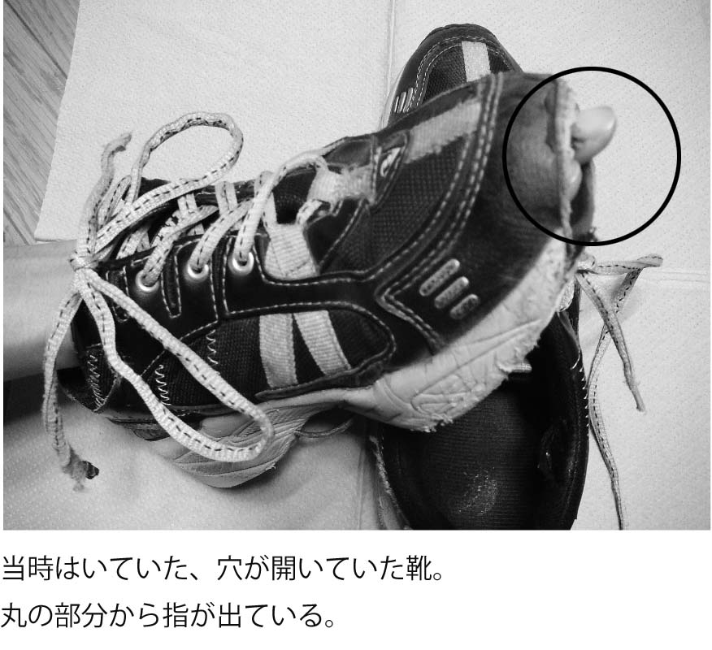
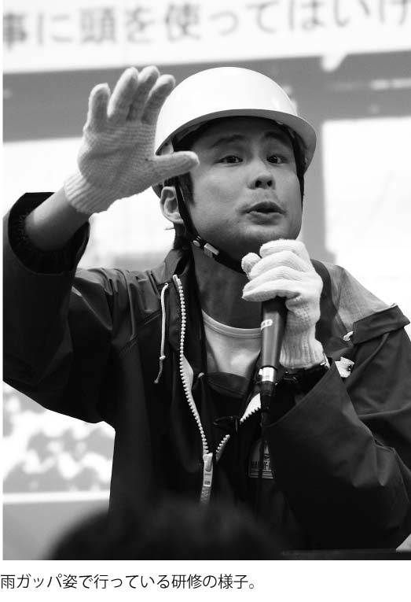

| 「自己啓発」は私を啓発しない (マイナビ新書) | |
| 齊藤 正明 | |
| (2013) | |
「自己啓発」は私を啓発しない
齊藤正明
◆本文中にはＴＭ、（Ｃ）、（Ｒ）などのマークは明記しておりません。
◆本書に掲載されている会社名、製品名は、各社の登録商標または商標です。
◆本書によって生じたいかなる損害についても、著者ならびに株式会社マイナビは責任を負いかねますので、あらかじめご了承ください。
◆本書の内容は、２０１３年４月現在のものです。
「今は実力の時代！」
「会社から必要とされる人材になって出世したい！」
「部下ができたから、強いリーダーシップやコミュニケーション能力を持ちたい！」
「うちの会社でもリストラが始まったらしい......」
「日本の先行きが暗いからこそ、より自分を磨かないと」
こんな考えや社会状況から、「自分を成長させたい」「何とか生き残らなければ！」と自分磨き・スキルアップの勉強会に通う人が増えていると言われます。
私は、休日などの時間を使って自分の成長のために勉強することは、とっても素晴らしいことだと思っています。
しかし、一方で自分磨きというものをやりすぎると、かえって仕事や人生をおかしくしてしまう危険性があることも、私自身が身をもって知っています。
私は今、人材育成の研修や講演を仕事にしていますが、大学を卒業した後、民間企業で研究開発の仕事に就きました。そして、入社後にたまたま当たった上司が仕事はできる人でしたが、メチャクチャな人でした。
上司は、自分が仕事ができる分、できない人を見るとたとえ社会人経験がゼロの私にも容赦なく、
「お前、そんなことも知らないなら、一回死んでこい！」
「そんな簡単なこともできないなら、一回戦場に行って撃ち殺されてこい！」
と罵倒するような人で、私は毎晩といっていいほど会社に寝泊まりして仕事をしていました。
「そんなにひどい会社なら転職すれば？」と思うでしょうが、当時の私は気が弱く、さらに社会人になりたてで世間がまったくわからない状態だったので、入社後数年は転職活動もせず、この本では書ききれないほどのパワハラを上司から受ける日々を送っていたのです。
結局、この上司に散々悩まされたあげく、ついには体調を崩して休職することになってしまったり、あるときはわけがわからないまま、業務命令でマグロ船に乗せられて赤道まで行かされたこともありました。
そのため、「このままじゃ、絶対過労死だ」と強い危機感を持つにいたった私は「上司からあまりにも無茶なことは言われないようにしよう」と考え、自己啓発のセミナーやコミュニケーションに関するセミナーを受講したり、高額な教材を購入したり、振り返ってみれば社会人になって数年のうちに、６００万円以上のお金を使っていました。
そして、こうした教材やセミナーにハマりすぎた結果、今度は上司以外の人間関係もおかしくし、余計に大変な20代を送るはめとなってしまったのです。
しかし、セミナー会社からカモにされたり、失敗の経験をたくさん積んだおかげで、徐々にそこで学んだことを自分の力に変えられるようになってきました。
そして、30代半ばとなった今、独立して企業のコンサルティングや研修を行うようになり、気づけば年間２００回以上の講演を行い、また、たくさんの本を書かせていただくようになりました。
バブル経済を謳歌したかつての日本とはまったく異なり、「リストラ」「就職難」という言葉がよく聞かれるようになった今、「自身の能力を磨くことが大事！」と言われています。恥ずかしながら私の場合、その言葉を額面どおりに受け止めて人生をよりおかしくしてしまった典型だと思います。
そのようなあやまちをおかす人を一人でも減らしたく、この本では、自分を磨くことの功罪に触れ、より自分らしく活躍できる手助けになればと思い、執筆させていただきました。自分を磨きたいという気持ちや考えは素晴らしいものですが、その付き合い方に、本書を読んで気づいていただきたいです。
この本は、特に「自分磨きを頑張っているが、空回りをしているように感じている人」「人生が思うとおりに進まず閉塞感でいっぱいになっている人」に読んでいただけると、お役に立てるのではないかなと思います。
なお、当時の様子を語るため、どうしても個人のプライベートな情報が絡んでしまいます。そこで、内容自体が変わらない程度に、名前などを変えて書いていることをご了承ください。
「自己啓発」は私を啓発しない 目次
はじめに
第１章 人間関係に悩み、自己啓発にハマる
希望に燃えて入社したものの......
きっかけは記憶力アップの教材
強面の、いかにもな風貌の人が登場
教材のカセットテープを聞くことに
言葉巧みに？説得される
気がつけば１５０万円のテープを購入することに
悩みが解消しない日々
よくわからないセミナーに８万円で参加することに
エライところに来てしまった......
会場中が異様な熱気に包まれ、その余韻が続く
第２章 次々と自己啓発をくりかえす日々
よくわからないセミナーの中級コースに参加することに
ひどい目にあってもなぜ受講生は怒らないのか？
上級コースを受講することに
セミナーも会社もカルト宗教と同じ？
所長の命令でマグロ船に乗ることに
マグロ船をきっかけに今の仕事に目覚める
セミナーを渡り歩く毎日
ついに休職することに......
自己啓発とは関係のなく問題が解決する
休職をきっかけに転職を考え始める
転職成功セミナーを受講する
第３章 自主開催セミナー・異業種交流会・ネットワークビジネス
いきなり講師デビューすることに
講演デビューから学んだこと
起業を思い立ち、お金を払って講演を聞いてもらう
初めての自主開催セミナー
自主開催セミナーから学んだこと
異業種交流会に参加する
情報交換会に参加する
ネットワークビジネスの勧誘だった！
人脈はつくるものではなく、できてくるもの
第４章 会社を辞めて起業することに
カンフル剤としての人事異動
断食修行に参加することに
想像以上に過酷だった断食修行
お坊さんの言葉に気づかされたこと
おもしろ半分でホストのコミュニケーション・セミナーに
ホストのコミュニケーションを実践してみたものの......
心の奥にあった人を操りたいという気持ち
出過ぎた真似をして経営者ににらまれる
大変なときなのに魅力アップセミナーに参加することに
見切り発車的に起業することに
第５章 講師として起業し、成功をつかむことに
「いける！」と錯覚していた起業当時
知人主催のセミナーのせつなさ
前向き思考は本当に正しい？
出版で成功することを思い立つ
出版成功セミナーに参加する
出会いから出版につながる
本を出したら周りの評価が変わった！
さらに講師養成セミナーに通うものの......
マグロ船スタイルにたどりつく
講師業が軌道に乗り始め、一気に人気講師に！
第６章 自己啓発から教わることはない
希望にあふれる時代があなたを苦しめている？
活躍できる人材になることと、人生が楽しいことはイコールではない
周りに流される生き方のほうがずっと楽しい
なぜセミナーや自分磨きにハマる人がいるのか？
セミナーも通いすぎると悪影響が
〝自己啓発〟しても他人はコントロールできない
自己啓発から〝教わる〟ことはない
自己啓発は〝学校〟ではない
おわりに
参考文献
希望に燃えて入社したものの......
「ここには霊が棲みついている......」
非常にドンヨリとした空気があたりを包み、霊感がない私でもすぐにわかりました。
それはどこかというと、私が初めて入った会社のことです......。とはいっても、あまりに唐突な話だと思いますので、順を追って説明したいと思います。
私は２０００年に大学を卒業し、民間企業で研究開発の仕事に就きました。初出社となる日の朝は本社に行き、朝礼で自己紹介のあいさつをすませました。
「ふー、やっぱりあいさつって緊張するなぁ」と一息ついて、研究開発の部署がある研究所のほうに移動しようとしたとき、一人の社員が寄ってきて、ささやくように言いました。
「齊藤君、これから大変だけど、頑張ってね......」
入社したころはすでに不況でしたので、「会社の業績のことで、どこも今は苦しいだろう」と思い、「はい、頑張ります。ありがとうございます！」と、深く考えずに新入社員らしく明るく返事しました。でも、その先輩社員の表情はとても心配そうな笑顔でした。
そして本社から移動して研究所に着いてみると、異様な重苦しい空気に包まれていて、「何だ、これは？！」と思ったのです。廊下の蛍光灯は消えかかり、今にも息絶えそうな感じでチカチカ点滅しています。２階にある私が働く部署の部屋に入ると、直属の上司から力なく、「今日から頑張ってね......」と他人事のように言われました。
水産系の研究開発の部署だったので、横には水槽が置いてあったのですが、その水槽は紫や黒のコケがベッタリと覆い、ほとんどなかが見えない状態でした。「何が入っているのかな？」とのぞいてみると、白骨化したサンゴがむなしく放置されたままになっており、水槽の周りには塩の結晶がびっしりとこびりついていたのです。
「なんだか、皆さん疲れていますね」と、遠回しに「この状況はどうしたんですか？」と上司にたずねても、力なく笑っただけで何も答えてくれませんでした。
この後、私にも段々わかってくるのですが、このドンヨリした空気は、霊のしわざなどではなく、この研究所を統括する所長が原因だったのです。
きっかけは記憶力アップの教材
この研究所の所長は、部下に無理な指示をすることが非常に多く、それでみんなのやる気がなくなっている状態だったのです。朝、研究所に出勤した後は、ミーティングということで所長のいる３階の部屋に行くのが日課となりました。すると所長から、
「今日は出張だから、13時になったら羽田空港に送ってくれ」
「おにぎり２個、買ってこい」
「グレープ味のジュースを買ってこい」
というような、公私がごちゃ混ぜになった指示を、小声で早口、しかも矢継ぎ早に出されます。多い日だと、10件くらいの指示が飛んできました。
この時間が私にとって非常に緊張をするときで、指示が覚えきれないと所長に、
「お前、朝、俺が言ったじゃねーか！ ただでさえ仕事ができねぇのに、こんなガキの使いみたいなこともできねーようじゃ、早く死ねよ！」
と、何度も怒鳴られていました。ちなみに、「死ね！」という言葉は、朝のあいさつのようなもので、１日１回は聞かされる言葉でした。
それで私が「忘れないようにメモをとらせてもらっていいですか？」とたずねれば、所長から「ダメに決まってんじゃねーか。それくらい覚えろよ。トレェなぁ」と舌打ちされるので、メモもとれず、結局は何かが抜け漏れしていました。なので、入社して間もないころの悩みは「どうしたら自分の記憶力が上がるだろう？」ということでした。
そんな悩みを持ちながら、ある雑誌を何気なく読んでいると、「記憶力が格段に上がる」トレーニング教材の広告を見つけました。その広告によれば、早回しでもクリアに声が聞ける専用のカセットデッキを使うと、脳の機能が上がり、テープを聞くだけで記憶力が非常に上がるというものでした。
私は「まるで自分の悩みを知っているかのような素晴らしいものがあるんだなぁ」と感動し、雑誌にくっついていたハガキに記入し、その日のうちに投函しました。
すると、数日後には相手先から電話が来て、お礼などひととおりのあいさつをした後、「この機械は、口で説明してもわからないと思いますから、一度、会社にお越しいただいて実物を試されてはいかがでしょうか？」と聞かれました。
今考えると、うかつすぎる行動でしたが、当時の私はとにかく「記憶力を上げたい」一心でしたので、すぐさま「ぜひ行きます！」と答えました。
この教材会社は、都心の一等地にあり、しかも名のとおった高層ビルのなかに入っていて、シンプルながら非常に高級そうな雰囲気を漂わせる広いオフィスでした。
強面の、いかにもな風貌の人が登場
その会社で待っていてくれたのは、栗山さんという方で、40代中盤と思われる年齢。色黒で、パンチパーマ風の髪型で怖い感じの顔つきの方でした。
スーツは、「おそらくヨーロッパ仕立てだろうな」と思われるツヤのある高級生地で、腕には「いかにも高いです！」と、一目でわかるようなキラキラ光るローレックスの時計がはめられており、それがなおさら怖さを引き立たせます。
かなり緊張していた私が、「す、すごい時計ですね......」と雑談がわりに言うと、栗山さんは照れ笑いをしながらも、「よくぞ、それを聞いてくれた！」と言わんばかりの表情で、「いや～この時計は、年収が１０００万円を超えたとき、自分へのご褒美に買ったものなんですよ」と、暗に「自分はできる人間だ」ということをアピールされました。
そして、栗山さんは「齊藤さんが今、何でお困りなのか、よく知りたいと思います。知ったうえで、ご提案できるところはご提案させていただこうと思っているんです」と、とても親身に話を聞いてくれそうな、にこやかな表情で対応してくれたのです。
それで私は、「所長からの指示を暗記できないので、『死ね』と毎日言われて悩んでいるので、記憶力を上げたいんです」という経緯を説明しました。
栗山さんは、私の話を聞くときは、ふかふかのソファーから少し前に身を乗り出し、両手を膝の前で組み、話が一段落するごとに「そうですか」「大変ですね」と良いタイミングで共感してくれます。
それがとてもうれしくて、30分ほど話していると、「怖い職業の人」という最初のイメージから、「この人、なんて親身に相談に乗ってくれるんだ」と、何でも話せる人に変わっていったのです。
ひととおり話し終わった後、栗山さんから「お話は、よくわかりました。それは本当に大変でしたね。うちにはいろいろトレーニングの機械がありますが、齊藤さんに合っていると思われるものを一回体験してみてください」と言われ、席を立ち、機械がおいてあるところに案内してもらいました。
広い机の上には、脳波を測るためと思われるヘッドギアのようなものや、カセットデッキやテープなどが整然と並んでいます。
「齊藤さんが希望する、記憶力を高める機械はこちらです」と、栗山さんが手を伸ばして紹介してきたのは、レンガを一回りほど分厚くしたようなカセットデッキでした。
イスに座るように促され、栗山さんから「テープはたくさんありますが、どれがいいですか？」と、予想していないことを聞かれたので、私は「え、選べるんですか？ じゃあ、即効性のあるものがあればそれを......」と答えると、
栗山「ああ！ ちゃんとご説明してなかったですね！ 実は、どのテープを聞いても、記憶力の訓練という意味では同じなんです。この機械は、再生速度を調整できて、４倍速で再生しても、ちゃんと声が聞き取れます。何度も繰り返し聞いて、この早い声を聞き取れるようになること自体が、脳の処理速度が上がったことと同じなんです」
私 「そうなんですね。じゃあ、どんなテープがあるんですか？」
栗山「うーん、40本くらいあるんですが、『集中力』『情熱』『前向き思考』など、成功者が身に付けておくべきテーマがそれぞれあります」
私 「記憶のトレーニングだけではないのですか！ 雑誌についていたハガキには、記憶力アップのことしか書かれていなかったので、全然知らなかったです」
栗山「うちの会社は、記憶力をメインにしているわけではなく、人生を成功させるためのお手伝いがメインなんです。成功者の思考を４倍速のテープで脳の潜在意識に流し込み、成功した人生を送ってもらうための手段として、記憶力のアップもお勧めしているんです」
「なんだか、話がおかしな方向に流れてきたな......」と思いつつも、もう相手の巣にずっぽりはまっている私は、「帰ります」とはとても言えず、「あー、そうなんですね」と、深い話にならないよう、あいづちを打ちました。
教材のカセットテープを聞くことに
その間に栗山さんは、テープをカセットデッキに入れて、ボタンをカチャと押し込みます。すると、重厚感のある男性のナレーターが「集中力。それは人間が与えられた無限の可能性を秘めた......」といったようなことをしゃべっています。
栗山「どうですか、聞こえていますか？」
私 「あ、はい、よく聞こえます」
栗山「これが標準速度の再生です」
数分間テープを聞いた後、栗山さんは「じゃあ、今度は２倍速で再生しましょう」と言って、目盛りを上げていきました。すると、先ほどはすごく重厚感のあったナレーターの声は、ヘリウムガスを吸ったような声になりながらも、マジメに「集中力」の話をしているのです。
おもわず笑ってしまいそうになりましたが、「ここは笑うところではない」と自制心を働かせ、「ああ、早いですね」と当たり前すぎる返事をしました。
数分聞かされた後、「では次は、３倍速で再生します」と、さらに目盛りを上げてきました。聞こえてくる声は余計におかしくなり、内容は聞き取れるところは聞き取れるという感じでした。
それを確認したところで、栗山さんは「では、最後、４倍速で再生します」と、目盛りを最大に上げてきます。すると、もはや何を言っているのかさっぱりわかりません。コントで見る宇宙人の会話のような、早口の「ゴニョゴニョゴニョ！」という音しか伝わってこなかったです。
「全然ワカラナイ......」、そんな私の表情を見て、栗山さんが満足気な表情で「どうですか？」とたずねてくるので、「全然、聞き取れませんでした」と言うと、栗山さんに「そうでしょう！ でも、訓練すれば聞き取れるようになって、記憶力も大幅にアップです！！」と満面の笑みで答えられ、元のソファーに戻るように促されました。
「齊藤さんは、所長との人間関係に悩んでいるようですが、このカセットを聞いて、記憶力を上げ、そして、成功者の考えを潜在意識にインプットできれば、間違いなく、社内というレベルではなく、日本でなくてはならない人材になります！」
と力強く断言されました。
でも、私にはそんな大志はなかったので、「所長との人間関係さえ、何とかなればいいんですけどね......」と答えると、栗山さんの表情はキュッと引き締まり、ローレックスの時計が見える左手を私のほうに突き出して言います。
「いいですか？ これは大事なことだからあえてお伝えします。『所長を何とかしたい』という目標を持ってしまうと、そこが自分の限界点になって、結果的には達成が難しくなります。もっと先のことに目標設定して初めて、その手前の目標は達成するんです！」
当時の私にはそれがすごく説得力がありました。今、こうして当時のことを原稿に書いていると、「なぜ、これで納得したんだろう？」と、自分でもわからないのですが、そのころは、ローレックスの時計が説得力を上乗せさせたのか、「そうかぁ！」と思ってしまいました。
言葉巧みに？説得される
でも、カセットテープの値段もわからなかったので、「ところで、これ、いくらするんですか？」と私がたずねると、栗山さんは「どのテープを選ぶかによって、値段は変わります」と、待っていましたとばかりに値段表を見せてくれました。
すると、一番安い「自己実現コース」で、１００万円。高いコースだと、２００万円もして、「ええ！」と心のなかで驚き、平静を装うので精一杯でした。
最初、最低でも１ケタは読み間違えていると思い、何度も心を落ち着かせて価格表の数字を追うのですが、やはり一番安くて１００万円なのです。
やっと出てきた言葉は、「まだ社会に出て数カ月の新入社員の私には、この金額は無理です」でした。
栗山さんは、私の答えを読んでいたかのように、すかさず、またローレックスの時計をはめた左腕を前に出し、眼光するどく言い放ちます。
栗山「いいですか。ここが齊藤さんにとって、最大の人生の分かれ道であることに気づいていますか？」
私 「ど、どういうことですか？」
栗山「成功者に共通していることは、『決断力の卓越性』なんです。確かにウチの製品は高価です。『高いから買わない』。これは、多数決的な結論です。しかし、多数決は正しくありません。失礼ですが、齊藤さんの周りで、お金持ちで毎日が楽しく豊かに生きている人ってあまりいないのではないですか？」
私 「た、確かに会ったことはないです」
栗山「でしょう？ それは、成功者は常に少数だからです。そして、少数の成功者は、多数決的な決断をしないので、一般の人と交わることがほとんどないからです」
私 「それはわかりますが、でも、貯金もそんなにないので......」
栗山「この製品は値下げをしません。今買っても、10年後に買っても、値段は同じです。それだと、いつ買ったほうがいいと思いますか？」
私 「お金が貯まった10年後ですか......？」
栗山「それは逆です！」
ここでまた、ローレックスの時計が見えるよう、左手がビシッと伸びて栗山さんが私の話をさえぎります。
「いいですか？ 齊藤さんの人生のチャンスは、１年後に来るかもしれません。今、これを買って、成功者の考え方を身に付けておけば、そのとき、チャンスをサッとつかみ取れるんです」
「でも10年後に買ったのでは、１年後にきていたチャンスに気づけず、取りこぼしてしまいます。そうして人生を後悔するんです。『ああ、あのとき買っておけば......』と」
「私は長年、お客様の無念の声をいっーぱい聞いてきました。だから齊藤さんだけは、今、若いからこそ、無理してでも成功の切符をつかんでおくべきなんです！」
こうして栗山さんは、何かを思い起こすような遠い目をして沈黙したのです。
私が「じゃ、じゃあ、今から頑張って貯金して、また来ま......」と言いかけたところで、栗山さんにさらなる追い打ちをかけられました。
「齊藤さんは、失礼ながらまだ私の話を理解していない！ いいですか？ 今、すでに成功者とそうでない人の分岐点に来ています」
「齊藤さんに言ってほしいのは、『お金を貯めてからまた来ます』という、普通の方が考えそうなことではなく、『じゃあ、どうしたらいいのですか？』と、常に〝できる方法〟を考えてもらいたいのです」
ここまで促されると、もう私が言えることはただひとつです。
「ど、どうしたらいいんですか？」
すると、栗山さんは「我が意を得たり！」という表情で、「じゃあ、今から齊藤さんと私で、一緒に〝できる方法〟を考えましょう！」
そうして出てきたものは、ローンのシミュレーションが書かれた用紙だったのです。
気がつけば１５０万円のテープを購入することに
栗山さんは、さっきまでの熱いテンションから、いつの間にか腰の低い営業マンに早変わり。
栗山「失礼ですが、今、月収はどれくらいですか？」
私 「20万円くらいです......」
栗山「そうですか、では、齊藤様の場合、毎月２万５０００円の60回払いで......」
と、気がつけば、ローン設計の話になっていました。
しばらくやりとりがあった後、ついに５年のローンで、総額１５０万円のカセットテープの購入計画が立ち、栗山さんはすがすがしい笑顔でこう言います。
栗山「ホラ、できたじゃないですか！ 不可能と思っていたものも、意志があれば可能なんです。ひとつ、成功体験を積みましたね！」
私 「は、はい！」
栗山さんの笑顔の効果もあってか、私も「やり遂げた！」という、すがすがしい気持ちにまでなっていました。
でも、今振り返ってみると、
「あれはうまいこと話に乗せられて、５年ローンで総額１５０万円の自己啓発のテープを買わされただけかな......？？？」
と思うようになってきました。
結局、４倍速で話が聞けるようになったかというと、私は聞けていません。
テープが役に立ったかといえば、確かに「仕事に臨むときは集中力を発揮すること」「協力者を増やすこと」「情熱を持って仕事に取り組むこと」など、話している内容は役には立ちましたが、それらは本屋さんで売っている１０００円ぐらいのビジネス書に書いてある内容と変わりませんので、「１５０万円の価値があったのか？」と聞かれると、気持ちよく「ハイ！」とは言えません。
栗山さんの話は、すべて私にローンを組ませるための口実だったのかな、と思うと悲しくなりますが、栗山さんが言っていた「人生、できない言い訳を考えるよりも、できる方法を考えよう」ということ自体は、今も正しいように思えます。
当時の自分を振り返ると、「一杯食わされた」とは思いますが、あれはあれですごくいい人生の勉強になりました。
ちなみにこのカセットデッキは、「ポケットに入れていつでもどこでも聞ける」というのがウリのひとつだったのですが、ポケットサイズにしてはかなり大きく、スーツのポケットに入れると非常に不格好な姿になってしまいます。
知り合いに見つかると、「豆腐を入れているの？」とか「レンガが入っているの？」と言われ、「いや、１５０万円もする......」と詳しく説明すると「そんなの買うなよ」と鼻で笑われるので、人と会うときにはあまり聞かないようにしていました。
悩みが解消しない日々
総額１５０万円のカセットテープを、なんべん聞いても記憶力は上がりませんでした。なので、相変わらず所長の指示はすべてを記憶することができず、「お前、このくれぇもできねぇようじゃ、一回死んだほうがいいぞ」と言われ続けていました。
なんだかんだいってこの所長は寂しがり屋だったので、お昼休みになると必ず人を誘います。でも口が悪すぎて、一緒に行く人があまりいなかったため、断るのが苦手な私がいつも連行されていました。
近くの定食屋に行くと、ＮＨＫのお昼のニュースが放映されています。
「○○県の国道で玉突き事故があり、運転していた会社員、一人が死亡しました」というようなかわいそうなニュースが流れると、所長からは常に「ひどい事故だ。かわいそうだよな」と言われるので、「本当ですね」と答えると、「お前が死ねばよかったのにな」と、真顔でしかも据わった目のままで言わるため、何も言えずに「す、すみません......」と謝り、うつむくことしかできませんでした。その後は、何を食べても味がしないという状態でした。
こんな日々が入社から１年ぐらい続き、ますます「どうしたら、この所長とうまく人間関係がつくれるだろう？」という悩みが膨らんでいったのです。
そんなおり、社内での飲み会がありました。１次会が終わった後、２次会に行く人は、「続けて飲みに行くグループ」と「カラオケに行くグループ」の二手に分かれました。私は、「帰るグループ」になろうと思っていたのですが、飲みに行くグループの人に捕獲されてしまいました。
２次会の席には、普段あまり話したことのない会社の経営者も何人かいて、社内では「鬼瓦」と陰口を言われるくらい常に厳しい表情をしている人が、宴会の席だったこともあり、「お、齊藤君、会社にも慣れた？」と、気さくに話しかけてくれました。
私は、詳しくは説明しなかったのですが、思いきって「所長とのコミュニケーションがうまくいかないところがありまして......」と相談すると、「それだったら、いい方法がある！」と、その人はとても自信のある表情で答えてくれました。
「さすが経営者って違うな～」と希望の光を見いだした私が「どんな方法ですか？」と明るく聞くと「いいセミナーがあるの！」と、経営者の目がランランとしていました。
それを聞いていた隣の先輩社員が、「また、そのセミナーですかぁ？」と、苦笑いの表情で茶々を入れると、「君はちょっと黙ってなさい」と片手で制します。「な、何だろう。このやりとりは？」とやや不安に感じていると、その経営者が言います。
経営者「齊藤君、あなたはね、ちょっと気が弱いところがあると思うの」
私 「そ、そうですね」
経営者「だから、カモにされていろいろと言われちゃうんじゃない？ 所長はとにかく口が悪いから」
私 「ええ、そうかもしれません」
経営者「これはね、私が所長に注意しても、齊藤君自身が成長しないと、結局は誰かにいろいろ言われるだけだと思うの。違う？」
私 「そう思います」
経営者「社会人として、自分が成長するには、やっぱりいろいろと訓練を受けたほうがいいと思うの」
私 「その『訓練』が、セミナーなんですね？ どんなことをやるんですか？」
それを聞いたとき、先ほどの先輩社員が半分ロレツが回らない口調で、「しゅーきょー、しゅーきょー！」と、青汁を飲んだときのような苦々しい表情で横やりを入れると、「君は黙ってなさい！」と経営者が先輩の膝をビシッと叩きます。
そして、「このセミナーはね、詳しいことは言えないの。体験学習だから、先に内容を説明しちゃうと、効果が出ないの。とにかく、このセミナーに行って、鍛えてもらえば、所長なんかに負けなくなるわ！」と言うと、私の背中をドンと叩きました。
私は「とてつもなくまずい世界の入り口に立ってしまった......」と、嫌な予感を全身に抱きながらも、引き返すのは難しい状態に追い込まれてしまいました。
よくわからないセミナーに８万円で参加することに
不安はあったのですが、所長との関係を改善できるなら何でもやる気でいたので、「とにかく行ってみよう......」と決意を固めたところ、３日間で８万円もする、内容のよくわからないセミナーに参加することになってしまいました。
セミナー会場は都内にあり、どうやら自社ビルのようです。広い一階のロビーで靴を脱ぎ、上の階にあるセミナールームに入ると、だだっ広く柱のない、きれいで広い会場でした。そこは天井も割と高く、バスケットボールの試合ができるくらいの広さがありました。
右も左もわからずにキョロキョロしていると、スタッフらしき人に、「こちらから順に詰めて座ってください」と誘導され、指示された場所で床に体育座りをしました。
穏やかなバックミュージックが流れているのですが、２００人ぐらいいた受講生たちは、私も含めみんなキョロキョロとあたりを見渡し、とても不安そうです。
きっと、ここに来た人は、私と同じように何をやるか教えてもらわずに集められてきたに違いないので、売られていく子羊のような心境だったと思います。
さて、そんな不安を感じる長い時間を耐え、セミナーが始まると、講師の人が登場しました。その人は50代の男性で、ダブルのスーツが似合う恰幅のいい、いかにも自信に満ちたようなピシッと背筋が伸びた姿勢で、会場の後ろからゆっくりですがキビキビと歩いてきました。
講義は身振り手振りでまったく飽きのこない立派なもので、小学生のころ、「早く終われよ～」と思いながら聞いていた校長先生の話とはまったく違うものでした。
特に、「人生とは積極性が大事で、とにかく前進することが大事です！」と、自らの経験をまじえながら、２００人も受講生がいて、後ろのほうで聞いている私からでもわかるくらい、顔を真っ赤にして熱弁をふるっていました。
私はいつの間にか話に引き込まれ、「確かにそうだよな～」と、自己を振り返りながら話を聞いていました。
すると講師は「この３日間のセミナーで、ぜひ、皆さんに覚えてもらいたい言葉があります」と言い、「するか、しないか、迷ったらヤル！」という言葉を、巨大な模造紙いっぱいに書きました。
そして、講師に「さぁ、皆さん、声を出して言いましょう！」と促されると、「するか、しないか、迷ったらヤル......」と、やらされ感たっぷりでみんなが言います。
講師は、また真っ赤な顔になり、
「だからダメなんです！ 知識は本で身に付きますが、行動は身に付きません。積極的な自分になるには、まずは行動です！ そのために、まずは声を出すことから意識を変えないといけません。それではもう一回、セーノ！」
受講生「するか、しないか、迷ったらヤル」
講師Ａ「まだまだです！ はい、もう一回」
受講生「するか、しないか、迷ったらヤル！」
講師Ａ「まだまだ、小さい！」
受講生「するか、しないか、迷ったらヤル！！」
講師Ａ「まだまだ、小さい！」
受講生「するか、しないか、迷ったらヤル！！！」
この大合唱は、３日間も続くセミナーのなかで、ノドが枯れるほど行われました。
「これが、〝しゅーきょー〟という意味か......」と、半分わけがわからないながらも「まぁ、でも勉強にはなるな」と思いながら受講していました。
エライところに来てしまった......
１時間ごとくらいに休憩があり、その間は、セミナールームを追い出されます。そして各自、ロビーに行ってお茶を飲んだりしてくつろぐのです。
あるとき休憩が終わり、セミナールームの大きな扉が開くと、会場のレイアウトが変わっています。非常に意味あり気に20個ほどのイスが、20メートルほど前方にこちらを向いて並べられているのです。
みんなが「何をするんだろう？」と、最初と同じ位置で体育座りをして隣の人とヒソヒソ話していると、テーマ曲とともに登場した講師が言います。
「これからグループを決めていきます。それにあたり、リーダーを決めていきます。決め方は簡単です。私が『スタート！』と言ったら、『我こそは！』という人は前に出てイスに座ってください。座った人がリーダーです」
私は、自分自身を変えて所長との人間関係を何とかしたいと思っていたので、「ここは冒険をして、イスに座ってみよう」と考えていました。
講師が「スタート！」と言うと、わずかな「超意欲的な人」はダッシュで、何となく意欲のある私を含めた２割くらいの「それなりに意欲のある人」は駆け足で、そして７割くらいの「いったい何なんだここは？」と思っている「嫌々な人」はダラダラとゾンビのように歩きます。
このイスが埋まったところで、講師が「ハイ、ストップでーす！」と広い会場いっぱいに響く雷鳴のような低い声を出すと、みんなが驚いてその場でピタッと止まり、「これは絶対に何か言われるぞ......」というような重々しい沈黙が会場を包みました。
「先ほど『人生を変えるには積極性が大事です！』とあれだけ講義して、皆さんにも、何度も『するか、しないか、迷ったらヤル！』と声に出してもらいました......」
「でも、どうですか、この結果は？ 今、イスを目前にして座ることができず、立ち止まっているあなたに言います！」
ここで、それに該当する受講生たちがドキッとした表情を浮かべます。
「あなたはそうやって、スタートが遅れるから、大事なところでチャンスがつかめないんです！」
「日本で一番高い山は富士山です。これは子どもでも知っていることです。では、二番目に高い山は？ と聞かれ、答えられる人はわずかしかいないはずです。一番と二番ではそれだけ違いがあるんです。あなたはそうやっていつも二番手で、努力をしても報われない！ そんな自分に気づいてください！！」
と講師に雷を落とされ、受講生は微動だにできません。
そして、その講師はスタスタとイスから離れた方向、つまり行動が遅かった人たちの方向に、不気味なくらいゆっくりと向かいます。
「こ、これはとんでもないことが起きるぞ」と、私を含め全員に緊張が走った瞬間でしょう。
そして、やせ型で黒縁メガネをかけた50代と思われる男性の前で歩みを止めました。
「社長、社長......。あなたは10名の社員を抱える経営者です。それにも関わらず、あなたはイスに向かって走るどころか、数歩しか進んでいません。あなたがリーダーシップをとらないから、社員が辞めるんです！ 売上が落ちるんです！！ そんな自分にいいかげん気づいてください！！！」
私は中学生以来、人がこんなに怒られているのは見たことがありませんでした。しかも、怒られているのは、子どもではなく50代の社長です。おそらくこの社長も、約２００人の視線があるなか、こんなに怒鳴られるのは初めてだったに違いなく、硬直して下を見つめるだけで、頭が真っ白になっているように見えました。
「こ、これはエライところに来てしまった......」と率直にそう思ったのですが、もはや逃げる場所はどこにもありません。
この後も意図がわからない「ゲーム」を自由にやらせ、このセミナーが考える意図に合わない行動をした人は、先の社長のようにボコボコに言われ、意図に合うような行動をしていた人は、すこーしほめられるということが３日間繰り返されるのです。
会場中が異様な熱気に包まれ、その余韻が続く
この３日間、私を含めた２００名の受講生は、「こ、このゲームの意図は何だろう？」と、戦々恐々とした気持ちで取り組んでいました。
そしてセミナーの最後に、講師から、教えをマスターしたということで「この成功者の知恵を習得した皆さんなら、仕事上でどんな困難があっても、必ず乗り越えられる素晴らしい人格と能力を身に付けました！」と賞賛されたのです。
私を含めた受講生たちは、まるでみんなの力を合わせて、魔王（講師）を倒した映画の主人公になったような気分になりました。
このとき会場中は、異様な熱気に包まれ、男女のわけへだてなく、つい３日前に出会った初対面の人たちと次々に抱擁を繰り返すという、日常では絶対にありえないようなハイな状態になっていました。
終了後は別れを惜しみ、みんなで飲みに行ったりするのですが、セミナー会場を出てもこのハイテンションは収まらず、路上でも男女構わず抱き合ったり、「するか、しないか、迷ったらヤル！！」など、セミナーで教えられたいくつかのキーワードの大合唱を、拳を振り上げて行い、道行く人たちから「コイツら絶対アタマがおかしい」という迷惑そうな目で見られていました。
でも、この状態の私たちには、恥ずかしさなどはほとんどなく、「自分たちは、このセミナーですごい考え方と能力を手に入れた！ もはや無敵だ！！」と完全に思い込んでいました。あのようなハイな気持ちになることは、人生で後にも先にもない体験となりました。
居酒屋に入った後でも、「俺は、何でもできるゾ！」と壊れたように連呼して、一般の客からクレームがきたり、他のグループの人ではお酒が回りすぎて救急車を呼ばれた人もいたそうで、このセミナーの威力というものは本当にすごかったです。
では、実際に仕事ができるようになったかというと、「それなりにできるようになった人もいるが、『無敵』と言うほどできるようになった人はいないのでは？」というのが現実だと思います。
（お恥ずかしながら、私も含め）人によっては、むしろセミナーが人生のよりどころになってしまい、「現実（仕事や家庭）」がウソの世界に感じてしまう人もなかにはいるので、こうしたセミナーについては、すべては否定しないのですが、かなり危険な面があるように感じます。
さてここまで「よくわからないセミナー」についてお話ししましたが、このセミナーはこれだけでは終わりません。実は４日目もあるのです。
ただ、４日目は激しいものではなく、面接という形でクールダウンさせながら、学んだことを定着させていくというもので、セミナーで使用した広い会場に机が所狭しと並べられ、あちこちで面接が行われています。
私の面接をしてくれた人は、30代のスポーツマンタイプのがっしりした体の男性。体形にピタッとスーツが合ったとてもデキる人という印象で、とてもさわやかな人でした。
面接官「齊藤さんは、この３日間で、何を学びましたか？」
私 「そ、そうですね。私にはまだ自主的に動いていくという積極性が全然足りていないな、とすごく気づきました」
面接官「そうですか。それは素晴らしい体験でしたね」
このような感じで、セミナー中は夢中であまり気づいていなかったことを落とし込んでもらえて、自分でも「確かにそういうことを学んだなぁ」と振り返ることができました。と、ここまでは非常によかったのですが、段々と空気が変わってきます。
面接官「齊藤さんは、このセミナーで素晴らしい学びをしたわけですが、それは、過去の自分に気づいただけです。大事なことは、そんな自分にサヨウナラをして、新しい積極的に動ける自分になる必要がありますよね？」
私 「は、はい」
面接官「それには、次の『中級コース』に参加して、新しい自分を定着させていかないといけません」
ということで、このセミナー終了後の面接という「学びを定着させる場」は、いつしか名ばかりとなり、次の「中級コースへの勧誘」になってしまっていたのです。
よくわからないセミナーの中級コースに参加することに
セミナーの最後の面接が、次のコースへの勧誘だったと言えるのも、「今思えば......」のことであって、当時は全然気づいていませんでした。ちなみに、次のコースの値段は、最初のコースの倍の約15万円で、まだ１５０万円のカセットテープのローンも残っていたので、内心、「かなり厳しいなぁ......」と思っていました。
でも最初のコースの面接で、次に参加するコースと、お金の入金日まで決められてしまいました。それで、「入金日まで決められちゃったけど、払えなかったら参加は延期すればいいや......」と逃げ道を考えていたとき、それを見抜いたのか面接官は、
「齊藤さん、入金日を守ること。これも研修の一環です。自分との約束をしっかりと守れると、自信につながります。先ほど『自信をつけたい』って、おっしゃっていましたよね？ お金が厳しいからこそ、工面して何とかする。これが成功体験となって、より上のステージに行けるんです」
こう言われた私は、「そうか、じゃあ自分のためにも頑張って約束どおり入金しよう！」と、今回も自らハマりに行ってしまったのです。
さて、そこから１週間後の中級コースに参加すると、会場には参加者約40名分のイスが円形に並べられていました。正面のホワイトボードには、「セミナーはすでに始まっています」とだけ意味あり気に書かれています。
「何だろう？」と思いながらも、最初のコースでの知り合いもいたので、「お！ ○○さんも、今日だったんですね！」と、再会を喜びました。最初のコースからたった１週間しかたっていないのですが、あの特殊な環境で３日間一緒にいたこともあり、非常に仲間意識が強くなっていたのだと思います。
セミナー開始時刻が近づくと、「雑談しているとまた怒られるゾ」と、皆一様に思ったのか、誰が指示するわけでもなく行儀よくイスに座り開始を待ちました。
しかし、意外なことに開始時刻を過ぎても、セミナーが始まる気配がありません。１分、１分と時が流れ、隣の人と、「どうしたんですかね？」といったヒソヒソ話が始まりました。
５分ほどたったころです。最初のコースとは違う人なのですが、ダブルのスーツと地味なネクタイ姿の男性が後ろから現れ、「ハーイ、そこまで！ あなたたちは何をやっているんですか?!」と、いきなりの怒鳴り声で入ってきます。一同がキョトンとしているなか、一人の男性が突如標的となりました。
「オイ、そこの社長」
と、いきなり「オイ」と呼ばれた男性は、どう反応していいかわからず、目を白黒させています。
「社長。あんた、このセミナーでリーダーシップを学びにきたんだろ？ 面接でそう言っていたそうじゃないか。で、あんたはこの５分間何をしていた？ ボサーッとただ座っていただけじゃないか。リーダーシップっていうのは、習って身に付くものか？ 自分で動きもしないくせに、社員には『積極的に動け！』と叱る......」
そう急に言われ、男性はやや不満そうな表情を浮かべました。
すると、講師と思われる男性が「何だその不満そうな顔。一丁前にふてくされるのに、結局は動かない......。いったいあんたは銅像か！！」と言い放ちました。
確かにその男性は小太りで不満そうな表情だったのですが、まさか受講生、セミナー会社からしてみれば、お客様を相手に「銅像か！」と突っ込みを入れるとは予想外で、参加していた一人が不快な表情を浮かべました。すると講師は標的を変え、その人に対して突っかかります。
講師Ｂ「オイ、そこのガス屋の坊ちゃん。何だその顔？」
受講生「いえ、何でもないです」
講師Ｂ「あんたも銅像と同じだ。自分からは動かないくせに不満だけは一丁前に言う」
受講生「言ってないです」
講師Ｂ「その口調のことを言っているんだよ。そうやって自分のこともわからないから、社員が言うこと聞かないんだ。いいかげん、気づきなさいよ。このボンボンが！」
そう言われた30代と思われる「ガス屋の坊ちゃん」も、下を向いてしゃべらなくなりました。
受講生は、宿題として家族構成や悩みなどを書いたプロフィールを事前に提出させられていました。講師はそのすべてを暗記しているようで、的確かつ辛辣な言葉で人の弱点をザクッとえぐってきます。
ここは最初のコースよりもはるかに厳しく、まるで強制収容所に入れられたような気持ちになって、「まずいところに来ちゃったなぁ......」と、後悔の気持ちでいました。
ひどい目にあってもなぜ受講生は怒らないのか？
このような地獄セミナーでの体験を、ずいぶんたってから居酒屋などでヨタ話として話すと、「それでよく、怒って帰る人がいないですね」と不思議がられます。怒って帰る人は、一人か二人いることはあるのですが、基本的にはみんな最後まで参加します。
初級コースでもかなり厳しく言われますが、そのとき、「ああ、厳しかったけど、確かに役に立つな」と思った人が次のコースに来ているので、むしろ厳しく言われることはありがたいことと受け止めているのです。
途中で「講師の言っていることは、何かおかしいな」と感じ、口ごたえをするとどうなるかといえば、「そういう屈折したものの見方をするから、社員さんがついてこないんです！」と、事前課題で提出した弱点をザクッと突かれ、たいていの人はシュンとしてしまいます。
もし、それにもめげずに反抗すると、「自分の殻に閉じこもったこの哀れな人に、皆さん『援助』をしてあげてください」と講師から言われ、約40名の全受講生から、その人に対して、「もっと頑張りましょうよ！」「言い訳しないでください！」「あなたは自分から逃げています！」と、もみくちゃにされて「援助」という名の総攻撃を食らうのです。
この援助は長いと１時間にもわたり、途中でメガネを踏み潰されている人もいました。とにかく、そこまで周りの人から自分のことを否定されると、「間違っているのは、やはり自分なのかも......」と考えを変えるようになり、講師の言葉は神の言葉に近づきます。
結果、講師から「......ということで、皆さん、わかりましたか？」とたずねられると、「ハイ！」というタイミングの合った軍隊さながらの返事が会場中にこだまし、一糸乱れぬ行動と思想の集団ができあがるのです。
教えられる内容としては、「うまくいかなくても、それを他人のせいにしない」「前向きに生きる」「率先して動く」「仲間を大事にする」など、確かに大事な価値観を体験学習で植え付けてもらえるので、それ自体は悪いものではないかもしれません（インターネットの告発サイトを見ると、場合によっては精神を壊してしまう人もいるようなので、けっして手放しに「良い」とは言えないのですが）。
セミナーでは、神に等しい講師の意図と外れることをやると、全員の前で血祭りといっていいほど罵倒され、意図に合ったことをやるとクリアできるワークショップになっています。
この両極端な仕組みが、「このセミナーの教えは素晴らしい！」「自分はもう、どんな仕事の問題もすぐに解決できる！」と強く信じさせるようにできているのです。
上級コースを受講することに
さて、この「中級コース」までは、まだ問題が少ないのですが、最後に待っている「上級コース」にまで進むと、一気に問題が膨らんでしまいます。
「初級」「中級」それぞれの３日間とは違い、上級コースは60日間も行われ（受講料は約７万円）、セミナールームではなく、日常のなかで実践するように言われます。
この実践とは何か？ ひと言で言えば、自分の周りの人たちを「初級コース」に、無償の営業スタッフとして勧誘することです。「そんなの誰がやるんだ？！」と思われるかと思いますが、ここがセミナー会社のうまいなと思うところです。
「上級コース」では、次のように講師から言われます。
「皆さんは中級コースを卒業して、多くの気づきを得ました。この素晴らしい体験の独り占めはいけません。周りの人に教えてあげて、周りの人に『仕事とは？』ということに気づかせてあげる。それが世の中に対する貢献です」
「上級コース」では、友人などを勧誘することを、「貢献」という言葉に置き換えます。「営業」とか「勧誘」とかの言葉を使うと、「あなたはこのセミナーの意味が理解できていないです！」と注意を受けるのです。そして、言葉はさらに続きます。
「仕事で忙しい合間をぬって、友人に『貢献（勧誘）』すること自体が、結果的にはあなたのタイムマネジメント能力やコミュニケーション能力を鍛えてくれるのです。さぁ、あなたは何人に『貢献（勧誘）』しますか？」
と、60日間で勧誘する人数をノルマとして決められてしまうのです。
当時の私は「このセミナーは素晴らしい！」と本心から思っていたので、何の疑いもなく、周りの人たちに声をかけまくっていました。
最初は親しい友人を呼んで誘うのですが、私と同じく若くてお金の余裕のない友人が８万円もするセミナーに、「わかった、行くよ！」とはなかなか言ってくれません。身近な人に断られると、今度は10年以上も会っていない人に電話をかけ始めます。
私 「あ、もしもし。齊藤です。すごくお久しぶりです......」
友人「おー、齊藤？ どうしたの急に？！」
私 「いやー、久しぶりにちょっとお茶でもどうかと思って......」
このような、無理矢理な感じで会う約束をとり、仕事を途中で切り上げて会いに行きます。そして、一時間ほどこれまでのお互いの近況を語り合って、場が温まったころ、ついに切り出すのです。
私 「ところでさぁ、最近、悩みとかってある？」
友人「え、唐突に言われても......。特にないけど」
私 「そうなんだ。実は、その悩みを解決するのに、すごくいいセミナーがあるんだけど......」
友人「え、俺、『悩みはない』って今、言ったよね？ それに何だよセミナーって?!」
と、ノルマでせっぱつまっていた私は、完全に相手の話を無視して勧誘していたので、「アイツ、とうとう完全におかしくなった」「変な宗教にハマってる」と、当然、周りから噂され、これまでの人間関係をボコボコに破壊してしまいました。
セミナー会社からは、「今日は『貢献（勧誘）』に成功しましたか？」と毎日電話が来て、「失敗しました」と報告すると、
「それはまだ、齊藤さんが本気ではないからです。同じ人に会って、ちゃんと本気で伝えてください！ そうすればきっと、わかってくれます」
と力説され、再度、同じ人に電話をしたら、相手から「頼むから、もう連絡してこないでくれ」と懇願され、二重三重にも周りに迷惑をかけてしまいました。
人間関係を破壊したのは、友人だけにとどまらず、職場でも信用を失いかけました。セミナー会社からは、日中でも電話がかかってきて、「本気で頑張っていますか？」「今日は、何人に会いに行きますか？」と追い詰められ、「今日こそ、『貢献（勧誘）』に成功します」と、職場の同僚から白い目で見られながら小声で答え、まるで借金に追われている心持ちでした。
そのため、「とにかく人に会わないと！」と気持ちが駆り立てられ、退社時刻になると、まだ仕事が残っていても外出する毎日になってしまい、職場でも「アイツ、仕事しないで何をやっているんだ？」と、信頼を失いました。
幸いにして、私は人見知りで営業なども苦手な性格でしたので、勧誘自体はうまくいきませんでしたが、しつこい勧誘の電話で、多くの方に迷惑をかけてしまったと、痛切に反省しています。
セミナーも会社もカルト宗教と同じ？
私の性格は「単純すぎる」と自分でも思いますが、それにしても、会社が長年成り立つくらい、このアブナイやり方がなぜ続いているのか不思議でした。カルトに関する本を読みあさって調べてみると、この手のセミナーは、カルト宗教によるマインドコントロールと同じやり方を使っていることがわかりました。
それは、次のような３つの手順を踏むのです。
１ 隔離する
連れてきた人を、外界から遮断したところに置き、不安にさせ、気持ちが揺れ動きやすい環境をつくる。カルト宗教の場合は、教団の講堂に来させる。セミナーの場合は、窓のないセミナールームに来させる。
２ これまでの生き方を全否定する
カルト宗教の場合、「お前のこれまでのような生き方が環境を壊し、神を怒らせ、近い将来、世界が崩壊する！」と、これまでの生き方を批判する。セミナーの場合、「あなたのその行動が、周りの人に迷惑をかけている！」と、これまでの生き方を批判する。
３ 救いを授ける
カルト宗教の場合、「教祖様に従えば、私たちは救われる」と、唯一の正解を出し、多くの信者が教祖の前にひれ伏す姿を見せる。セミナーの場合、講師が「こういうふうに行動すれば、道は開ける！」と、唯一の正解を出し、そのとおりに動けばワークショップがクリアできるようになっている。
しかし、この３つのステップは、何もカルト宗教や地獄セミナーのような特殊なところだけで行われているのではなく、企業でも似たようなことが行われているように思うのです。
私が勤務していた研究所の所長は、個人的なスキルとしては非常に優秀な人で、部下への指導に問題があることを知っていても、経営者すら文句が言えないほどでした。そうした能力のある人が上司になると、（全員ではないのですが）周りの人がバカに見え、「お前、そんなのもできないのか！」と、部下の仕事を全否定します。
そして、「こうやればいいんだよ！」と、唯一の正解（上司の勝ちパターン）を見せるのですが、それはその上司にしかできないやり方なので、部下にはうまくできません。
すると、「お前、本当にグズだな！」と、ダメ押しの言葉を言い放ち、部下は、「上司はできるのに、私はできない。だから私はダメな人間なんだ......」と、より自信をなくして、部下はいつまでも成果を出せなくなる悪循環に陥ってしまうパターンがあります。
本当に悪いのは、「お前は仕事ができない！」と、仕事ができない人になるよう、わざわざ暗示をかけている上司です。
だからといって、「上司には、ちゃんと部下を育ててもらいたい」と考えたり、「何てひどい上司だ！」と怒っても、無駄なことだと思います。なぜなら、怒ったところで残念ながら聞き入れてもらえるとは思えないからです。
今、会社で「上司」と呼ばれる人は、高度経済成長時代やバブル時代に社員になった人が多いです。その時代は景気がよかったので、ポンポンと人を雇っていました。そして、年功序列という日本の仕組みもあいまって、優秀でなくても上司になってしまった人は山ほどいるのです。
それに、営業マンとして優秀だった人が出世して管理職になったからといって、管理者として優秀かどうかはまったく別の話です。野球でよく言われる、「名選手が名監督になるかと言えば、必ずしもそうではない」というのと同じです。
なので、自分を責めすぎる傾向がある、おとなしい性格の人は「あれは上司がアホだから悪い！」と、心のなかですべて上司のせいにしてしまいましょう。
「素直」という性格は、一般的には美徳とされていますが、上司に問題がある場合には、それが裏目に出ることもあるのです。ときには上司のやり方を無視して仕事したり、どうしようもない場合は転職することも視野に入れたほうがいいと思うのです。
所長の命令でマグロ船に乗ることに
さて、入社から４年たっても、私は変わらず所長から毎日ボコボコに言われ続けていました。
たとえば、私は会社のファクスを使うことが許されませんでした。ファクスを使おうと思い、ボタンをピッピと押していると、それを見ていた所長が言います。
所長「お前、ファクスを使うなんて、エラくなったな」
私 「え、いや、お客様に連絡をしないといけないもので......」
所長「お前、坂本龍馬の時代にはファクスなんてなかったんだぞ」
私 「そ、そうですね......」
所長「でも、龍馬は薩長同盟とかスゲェこといっぱいやっただろ？」
私 「そ、そうですね......」
所長「若ぇうちからファクスなんて便利なもんを使っているから、いつまでも仕事できねぇんだよ。どうしても使いたかったら、自分の金でコンビニから送信しろ」
所長は明治維新の英雄が好きだったので、私はこのような怒られ方をよくされており、この日から本当にファクスはコンビニで送信することになってしまいました。
ちなみに当時の私は、マグロの刺身などの鮮度が落ちにくくする「鮮度保持剤」というものの開発を担当していました。会議のなかで、所長が私に質問をします。
所長「オイ、齊藤ちゃん」
私 「は、はい！」
所長「お前、マグロの鮮度保持剤の開発は進んでいるのか？」
私 「あっ、いや、やってはいるのですが、ちょっと遅れていまして......」
所長「そうか、遅れているのか......。お前がマグロの鮮度保持剤の開発を一気に進めるためには、ひとつだけいい方法がある」
私 「ど、どんな方法ですか？」
所長「マグロのすべてを知ってこい」
私 「すべてを知る？」
所長「そうだ。すべてを知るために、お前は一度、マグロ船に乗ってこい」
このとき、私も含めた参加者一同が、「なぜ齊藤がマグロ船に乗ると、マグロの鮮度保持剤ができるのだろう？」と理解できなかったのですが、所長の決めたことには誰も逆らえません。
とうとう私は血液の病気やゼンソクなどのいくつかの病気を持つ超虚弱体質にも関わらず、マグロ船に１航海（約40日間）乗せられてしまうことになってしまいました。
マグロ船をきっかけに今の仕事に目覚める
マグロ船は、乗る前は「どんなに恐ろしいところだろう......」と冗談抜きで死を覚悟していました。ちなみに乗せられたマグロ船は、テレビなどでよく見かける、カチンコチンに凍ったマグロをクレーンでつり上げているシーンでおなじみの「冷凍タイプの船」ではなく、凍らせず、「冷蔵で港に持ってくるタイプの船」でした。
冷蔵タイプのマグロは、冷凍に比べてモチモチとした歯触りがあり、刺身自体に甘みがあります。一般的な話ですが、冷凍マグロはスーパーマーケットなど大衆向けに卸され、冷蔵マグロはお寿司屋さんなどで主に使われます。
ただし、冷蔵マグロの場合、当然のことながら時間がたつとマグロが腐ってきてしまいます。そこで捕れたマグロは、できるだけ鮮度を高く維持するため、迅速、かつ、ていねいに、腐敗しやすい内臓を取り除く処理を行っています。
私は、数百匹のマグロが内臓を処理されていく姿を見ていましたが、船長が一番、処理をする作業が早かったです。人間の子どもほどもあるマグロをさばくときの足さばきや、作業がしやすいようマグロをゴロンと転がすリズムが一定で、まるでダンスのようにも見えました。
そこで、「やっぱり船長はすごいな」と思い私が、
「船長はマグロを処理するの、早いですね。周りの人も、すごいと言っていました。やっぱり、人よりもできるところがあると尊敬されるんですね」
と言うと、船長から、
「おいどーが尊敬されちょるのかは知らんが、マグロ船では、すごいことができる奴は尊敬されんのぞ」
と答えが返ってきたのです。
私にはその意味がわからず「どういうことですか？」とたずねてみました。
船長「できる奴は、『オレはできる』と思うから、威張るようになるけぇのぉ。そうなると、誰も取り合わんようになる」
私 「確かに嫌な奴って、できる人に多かったりしますもんね」
船長「自分にできねーことがあるほうが、若ぇ子のやることでも、うまくやりよるなら、『うめぇのぉ』って言えるじゃねーか」
私 「そういえば船長は、若い漁師のことも、よくほめてますよね」
船長「人はの、仕事ができるできないよりも、自分をちゃんと見ててくれる人を好きになるんじゃねーんか？」
このように船長は、「俺が、俺が！」という前に出るタイプの人ではなく、乗組員のいいところをほめ、それにより「この船長は、俺のことを正しく見てくれている」というお互いに対する深い信頼感がありました。
結果、荒波のなかという厳しい環境でありながらも、船内はやる気と笑顔であふれていました。「マグロ船は怖いところだ」という私の偏見は、いい意味で裏切られたのです。
当時勤務していた研究所は、所長が無茶なことを言いすぎるため、皆、やる気をなくしていました。しかし、マグロ船では、狭くて不便だからこそ、船長は船員の士気を高め、上手にコミュニケーションをしていました。
その姿を見たとき、「将来、所長みたいに人を傷つけるのではなく、船長みたいにみんなを元気にできる人になりたい！」と思ったのが、のちに独立して人材育成の仕事を始めるきっかけになったのです。
セミナーを渡り歩く毎日
マグロ船に乗せられたのは、人生で最高に幸運な出来事だったのですが、それはあくまで運がよかっただけで、乗せられたのは完全に所長の思いつきだったと思います。
私がセミナーにハマったのは、セミナー参加の動機としてよく聞く「仕事で成功したい！」とか「お金持ちになりたい！」といったような前向きな理由ではなく、「所長との人間関係をよくしないと、過労死してしまう......」という恐怖感からでした。
それで、冒頭にお話しした「１５０万円のテープ」を買いました。でも、所長との関係は変わりませんでした。
そこで、「きちんと論破できるようにしておこう」と考え、ディベートのセミナーに約５万円払ってディベートを習いましたが、ヘタに論破すると火に油を注いでしまうこととなり、余計に「死ね！」と言われるようになりました。
上司をこっそり操る「部下としての能力を上げるセミナー」というコミュニケーションのセミナーも約１万円かけて習いましたが、これも「お前、最近態度がおかしいぞ」と怪しまれ、うまくいきません。
しまいには神頼みということで、風水のセミナーにも５０００円かけて参加し、「南側をきれいにして、太陽の光がいっぱい入るようにしなさい」と教わりましたが、いくら掃除をしても効果はナシ。
「お前、そんなところ掃除しているヒマがあるなら、俺の部屋を片づけろよ」と、書類が散乱し、何が原因かわからないのですがカビ臭くなってしまっている所長室の掃除を命じられるだけでした。
とにもかくにも何をやっても効果はなく、「どうしたらいいんだろう？」とアタマを抱えていたころ、「日産自動車のＣＥＯであるカルロス・ゴーンが、Ｖ字回復を成功させたのは、コーチングという手法が鍵だった」と言われ始め、一気にビジネススキルのなかで注目され始めたのです。
コーチングの特徴のひとつは、指示や命令をしないことです。相手に上手な質問を投げかけることで相手の頭が動き出し、自分で「よし、こうやろう！」と行動が変わってくれるというものでした。
所長に「ああしてください、こうしてください」とお願いしたら、当然「お前が俺にエラそうな口を利くな！」と言われるので、「コーチングを使えば、気づかれずに所長をコントロールできるかもしれない」と、ワラにもすがる思いで60万円も払い、セミナーに参加するようになりました。
そこでは、参加者が資格取得を目指し座学と実習で腕を磨きます。実習は主に電話で行い、20人くらいまで同時に通話できる電話で、先生からの質問にひとりひとり答えるような形式で進んでいきます。
たまには顔を合わせての実習もあり、そのときは三人一組になり、問題解決をしてほしい「相談者役」、それを解決する「コーチ役」、やりとりを観察して後でアドバイスをしてあげる「観察者役」に分かれて、より実践的なスキルを身に付けるということをやりました。
このようなセミナールームでは、「お、自分も段々うまくなってきたな」と実感してくるのですが、残念ながら所長との人間関係は変わりませんでした。それはコーチングに効果がないということではなく、コミュニケーションというのは、最終的には相手次第だからなのだと思います。
相変わらず朝から「お前、まだ生きてたんだ」と、見下す目で笑われ、夜には飲みに連れて行かれて３～４時間の説教をされ、おまけに「今日も俺はお前に仕事ってもんを教えたんだから、お前が払っておけ」と言われ、飲み代まで払わされる生活が続いていたのです。
ついに休職することに......
ここまで、まだ若手社員で薄給にもかかわらず、すでに数百万円というお金を教材やセミナーに使って上司との人間関係を改善しようとしてきましたが、すべてに効果がなく、八方塞がりの状態でした。
ついに緊張していた糸が切れたのか、仕事への意欲がパタリと消えてしまいました。会社には行くのですが、何をするわけでもなく、机の前にいるだけで、気づくと一日が終わっているのです。
頭のなかでは、「これもやらなきゃ、あれもやらなきゃ」とは思うのですが、その一方で、「どれも無駄だな......」と結論を出し、堂々巡りの議論がずっと頭のなかで行われていたのです。
食欲もほとんどなく、お昼ご飯を食べにいってもほとんど残してしまうようになったので、周りの人たちからも「おいおい、大丈夫か？！」と心配されるようになってきました。
おまけに眠れなくなってしまい、目の周りのクマがかなり目立ち始め、先輩社員から「病院行って、睡眠薬とかもらってきたほうがいい」と勧められ、精神科に通院を始めました。しかし、薬を飲んでも一向によくなる気配がありません。原因である所長との関係が変わらないので、当然と言えば当然です。
通院し始めて２カ月ほどたったとき、お医者さんから「このまま会社に行っても治らないから、一回お休みしたほうがいいと思いますよ」と言われたので、会社に提出する診断書を出してもらいました。
診断書をもらっても、所長に見せるとまた何を言われるかわからなかったので、１週間ほど提出するのをためらっていたのですが、あまり長く放置していてもいけないと思い、勇気をふりしぼり、所長のいる３階の部屋に行きました。
いつもは行かない時間に部屋を訪ねたので、所長は「何だ？」というような目で見ていたのですが、小刻みの歩幅で所長に近づき、「しばらくお休みをいただきたくて......」と言い、診断書を渡しました。すると所長は無言でそれを読み、「......ハンコ、押しときな」とだけボソッと言いました。
こうして私は、会社をしばらく休職することになりました。
自己啓発とは関係なく問題が解決する
しかし、休み始めてひと月がたったころ、事態が急変しました。経営層も「この所長は、個人スキルは高くて優秀だが、部下の管理を任せると部署がおかしくなる」と判断し、役職名こそ所長のままですが、部下の指揮命令権が外されることになったのです。そして、この約１年半後に所長が退職するという形で、私が何年も悩まされた人間関係の問題が結末を迎えたのです。
つまり、「所長とのコミュニケーションを良くしよう！」と、これまでいろいろなセミナーに参加して頑張ってきた私の努力はまったく無意味で、勝手に問題が解決してしまったのです。
ビジネス書でもセミナーでも、一人でも多くの人にお金を出してもらうため、「これを習えば、誰とでも仲良くできる！」「相手にイエスと言わせることができる！」など、どうしても魅力的なセールストークをする必要があります。でも、結論から言えば、変わらない人は変わりません。
私は、周囲を困らせる人を無理に変えようとか、何とか仲良くしようとするのではなく、いっそ最低限の付き合いにとどめるべきだと思います。その分、浮いた時間で、自分を理解してくれる人や大事な人にもっと時間を使うほうが良いように感じるのです。
つまり、何か学ぶことで変えられるのは自分一人で、それによって周りの人の何人かが、奇跡的に変わってくれるかもしれないというのが実際のところだと思うのです。私にとっての所長は、こうした悟りにも近い人間関係の本質を、体を張って教えてくれた恩人とも言えます。
「教師」という言葉を聞くと、勉強を教えてくれる人というイメージがありますが、それは学校だけで通用する言葉だと思います。社会に出た後の「教師」とは、残念ながら自分に対して困ったことをしてくる人のことで、イメージにある教師と呼ばれる人と真逆の人のことを言うのではないでしょうか。
人を変えようと無理な努力をするのではなく、自分がより魅力的な人格の持ち主となり、一人でも多くの味方をつけていく生き方を目指そうと思ったとき、私にとってこの所長は、嫌な上司から、素晴らしい教えを授けてくれた名教師になりました。
休職をきっかけに転職を考え始める
しばらく休職したのち、復職する日の前日はとても憂鬱でした。特に所長と顔を合わせたときに何と言えばいいのかがわからなく、「どうしよう、どうしよう」と思っている間に朝になってしまいました。
重い足取りで出社したところ、さっそく所長に会ってしまい、さすがに何もあいさつをしないわけにもいかなかったので、できるだけ平静につとめて「おはようございます」とあいさつしました。
所長「もう、治ったのか？」
私 「おかげさまでだいぶよくなりました」
所長「そうか。もういないかと思ってたよ」
という言葉を残し、所長は「ヘッヘッヘ」と笑いながら去っていきました。
それまでの私なら「わ、怒っている。どうやって機嫌をとろうか？」と慌てていたと思うのですが、この日は「やっぱりこの人はこういう人か......」と割り切れる自分になっていました。
気の弱い私は、所長から常々「お前、これくらいもできないなんて、どうかしているぞ。この会社では俺が面倒を見てやっているからまだいいものを、これがよその会社だったら、お前なんかとっくにクビだぞ。俺が所長でラッキーだったな」と言われていたのを、ずっと真に受けていました。
なので、頻繁に飲み代を払わせられようが、マグロ船に乗せられようが「私はダメな社員なんだから我慢しなければ」と思い続け、まるで自分から小箱に入って蓋を閉め、封もされていない箱から出てこないような人間でした。
そのことに気づくまで実に４年以上もかかってしまいましたが、今回のことをきっかけにようやく自分から動こうと思いました。
そのための第一歩として、「転職をしよう！」と考えました。それも、同業種である水産系の技術職にではなく、人材ビジネスという異業種への転職を目指しました。そう思ったのは、先にお話ししたとおりマグロ船での体験がきっかけでした。
実際、そこから転職サイトに登録したり、転職の合同説明会などにせっせと足を運ぶようになりました。当時の狭い考えの私にとっては、これでも十分な志望動機だったのですが、世の中そんなに甘くありません。
転職サイトを使っていろいろと希望を出しても、まったく会社を紹介してくれません。運よく面接にこぎつけたとしても、「技術職から人材ビジネスへの転職はあまり聞いたことはないですが、なぜですか？」と必ず聞かれ、「はい！ それはマグロ船に乗せられて、人の重要性に気づいたからです！」と答えても、面接官の表情は明らかに「？」という感じで、当然どの会社も雇ってくれませんでした。
転職成功セミナーを受講する
当時の私は何が問題で転職活動がうまくいかないのかわからなかったので、「転職成功セミナー」を受講してみました。
セミナーには、20代中盤くらいの男女が50名ほど来ており、席はグループ状の配置になっていました。そこでは面接の受け答え方や、履歴書の書き方など、手取り足取り教えてくれる内容でした。
転職を成功させるセミナーですから、参加者が期待することは「自分をどうしたら高く売れるのか？」ということで、私も含め、皆、講師の話を真剣にメモし、ギラギラとした目の輝きで席に着いていました。受講生から燃え上がる、そんな野望にも似た炎を察知したのか、講師は口を開きます。
「話は変わるんですが、ひとつ大事なことをお伝えします」
私たちはペンを持ち、一言一句も聞き漏らすまいと、ノートをとる構えをとります。
「転職も含めた話なんですが、仕事をうまくいかせるために......」
「自分を安く売ってくださいね」
私たちは一斉にペンを走らせた後、「は？」と拍子抜けした気分になり、「高く売るために、今日来たんですけど......」という雰囲気が広がりました。〝野望にも似た炎〟が、講師のこのひと言によって、一気に鎮火させられた気分でした。
「自分を高く売るというのは、原理的にはちょっと成り立ちにくいです。極端なたとえですが、お茶くみのような雑用って、好き好んでやる人っていないと思います」
「でも、そのお茶くみのようなどうでもいい仕事でも、『この人は濃いのが好きだよな』『この人は熱いのが好きだよな』という相手の好みを覚えて、それに合ったお茶を出せると、周りの人が、『この子は使えるな』と思ってくれるんです」
「それによって、人手が足りないとき、『あの子に手伝ってもらおう』と、ちょっとだけやりがいのある仕事が回ってきて......というのを繰り返すことで、徐々に活躍の場が広がるんです」
「高く売るというのは、実績が足りないのに、『条件のいい仕事や高い給料の仕事に就きたい！』と、自分勝手なことを言っているのと同じで、そんなの雇う側が首を縦に振るわけがないですからね」
と語る講師に、私たち受講生は、自身の考えの浅はかさに、やんわりとではありますが、しかしよく切れる刀でバッサリと切られたような気分になりました。
「特に異業種への転職を狙う人は、雇う側は、あなたを海のものとも山のものともわからないと思っていますから、雇用条件は一切目をつぶり、まずは雇ってもらうことを考えましょう」
「そして、お茶くみとかコピーとりのような誰でもできるような仕事で、やる気や気遣いができるところをさりげなく見せ、信頼を積み上げることで、結果的に高い人材になることを目指すことを勧めます」
と講師から言われました。
このセミナーは、参加費が約３万円で２日間かけて行われていましたが、初日に「小さな実績を積み重ねないとやりがいのある仕事は回ってこない」という、この話を聞けただけで、もう帰っても十分に元がとれた気分でした（と言いつつ、受講料がもったいないので、最後まで参加しましたが）。
いきなり講師デビューすることに
転職セミナーを受講した後も、何度となく転職活動をしていましたが、依然として人材ビジネスの会社から採用してもらえることはありませんでした。
しかし仕事上の、いや、人生で最大のストレスの原因であった所長とのトラブルは、所長の指揮命令権がはく奪されることで、一応の解決はしていたので、採用されなくても大きく悩むことはなく、「まぁ、採用の条件を引き下げて、数打ちゃ何とかなるだろう」と気楽に考えていました。
「人材ビジネスに転職するんだから、やっぱりコミュニケーションスキルは高いほうがいいだろう」と考え、土日の休日は、問題が解決する前と変わらず、いろいろな勉強会に通っていました。
そのひとつに、千葉県の船橋市で毎月開催され、毎回通っていたコミュニケーションスキルの勉強会（参加費：１回50～１００円程度）がありました。
いつもどおりに参加していると、何の前ぶれもなく勉強会の主催者から「今度、齊藤さんが勉強している『交流分析』という心理学について講演をしてくれない？」と頼まれたのです。
「交流分析」とは人間関係の交流を分析した心理学なのですが、この話をしていると本論からずれるので、細かい説明は省略します。
この会では毎回、参加者の誰かが講師役になり、自分が勉強していることについて１時間ほど講演をするのが定番だったのですが、まさか私に声がかかるとは思ってもみませんでした。
当時の私は30歳に満たなく、参加者のなかでは一番若い部類に入る存在でした。おまけに技術職なので、講演どころか人と話すことすらあまりなかったのです。職場では、おしゃべりをしているのがうっかり所長に見つかると「お前、そんな油売っている余裕がどこにあるんだ？」と、低い声で言われてしまうので、極端なときは「おはようございます」くらいしか発しない日もありました。
そんな私に「20名くらいの参加者の前で１時間話せ」というのですから、かなり無茶な依頼です。
しかし、「人材ビジネスに就きたいのであれば、講演までできなくても一応のプレゼンテーションはできるほうがいいよな」と前向きにとらえ、自信はあまりなかったのですが、その場で引き受けました。
その後、私は過去に参加した勉強会の資料などをひっくり返し、数カ月かけて講演内容をまとめ、通勤電車でブツブツと講演のシミュレーションを繰り返していました。
いくらテキストを作り込んでみても、どこかに決定的なミスがありそうな気がして、不安で不安で仕方がなかったのですが、とうとう講演デビューの日になりました。
参加者は20名程度で、平均年齢40代中盤と、私より15歳以上年上の人ばかり。おまけに人事や人材育成の業務をしている方も多くいたので、不安で冷や汗が止まりませんでした。
しかし当然、時間は止まるわけもなく、ついに講演の時間が始まりました。たどたどしい話し方で、聞くほうもヒヤヒヤしていたと思うのですが、何とか無事に終え皆さんから拍手をもらえました。
アンケート評価では、10段階評価で８・９という高評価を参加者の方から得られ、大変に好評でした。
ただし、この高評価は今考えれば当たり前ですが、参加者の皆さんの優しさのおかげです。「相当ヘタだったけど、全力ぶりは伝わったから、まぁ、その頑張りに１票入れてあげよう」と思ってくださったのだと思います。
幸運だったのは、参加者の一人が「おもしろかったから、今度うちの勉強会で話してよ」と、より大きい規模での講演の機会を与えてくれました。
極端な結果論ですが、この１件の小さい講演の成功が新たな講演の依頼を呼び、それがずっと続くことで、現在のように年間２００回以上の講演をするようになったのです。
講演デビューから学んだこと
それまで私は、「人材ビジネスに関わるには、転職を成功させてその業界に就いたり、人事部で働かないといけない」と思い込んでいました。
しかし、講師デビューの体験をさせてもらい、新たな気づきがありました。それは、やりたいことがあるなら、それをわざわざ仕事にする必要はなく、今この場で、できることから始めればいいのです。
たとえば私のように、人に関わることをしたいのなら、次のようなことなら比較的簡単にできると思うのです。
①趣味で通っている勉強会で、講演をさせてもらう
これは、講師業と同じ体験ができることです。
②合コンを主催して、出会いの場をプロデュースする
これは人材派遣など、マッチングビジネスと似た体験ができます。
③友人の悩みをじっくり聞いてあげて、解決までを手伝ってあげる
これは、人事コンサルタントと似た体験ができます。
同じく、もしミュージシャンになりたいなら、駅前で歌ったり、カラオケ大会に出たり、ユーチューブなどの動画サイトに自分が歌っているビデオを載せることから始めたらいいのです。会社を辞めたり、芸能事務所を探す必要などないのです。
「本格的にやらなくちゃ！」と思えば思うほど、「いい楽器を持っていない」「まだ十分にうまくない」と、あれこれ言い訳し始め、結局はいつまでも始められません。「やってみたい！」と思う仕事や夢があれば、無理なくできる範囲で、今日から小さく始めて、段々と育てていけばいいのです。
才能や運があれば、私のようにそこから成功の階段を上っていけるでしょうし、そうでない場合は、やめればいいだけです。小さくやっている分には、やめても生活には何も支障はありません。
大きな夢を持つのは素晴らしいことですが、それをかなえるにはごく小さな一歩から始めるべきだと思うのです。
起業を思い立ち、お金を払って講演を聞いてもらう
講師デビューで思いがけなく喜んでもらえたことに味をしめ、「人材ビジネスに就くには、転職活動をするよりも起業するほうが近道かも」と選択の幅を広げるようになりました。
「起業」という言葉を聞くと、つい、「借金をしなきゃいけないんじゃないのか？」とか重たく考えがちですが、研修講師はその点は非常に低コストですみます。極端な話、パソコンと携帯電話があれば何とかなってしまうので、非常に起業しやすいのです。ただし、当然、講演の技術がないと成り立たないので、「まずは腕を磨こう」と考えました。
今の時代、私と同じことを考える人も多いようで、講師を養成するセミナーは、東京ではたくさん開催されています、参加費はピンからキリまであり、私が参加したなかでは、安いもので５００円、高いものでは10万円を超えていました。
こうしたセミナーに通うと、しゃべり方や話の組み立て方などをとても親切に教えてくれます。こうして習ううちに、「ここで習ったことを元に、一般の人を前に講演してみたら、どんな反応になるのだろう？」ということが、とても気になり出しました。
かといって、急に知らない人を呼んでお金をとるというのも怖いので、自分で会議室を借り、そこに仲のいい友人たちを10名ほど呼んで、ほぼ半日セミナーを聞かせ、アドバイスをもらおうと考えたのです。
ただ、せっかくの休みを削ってもらい私のために時間をいただくので、セミナー後の飲み代は私が負担しました。
「講師を始めたころって、お金はいくらくらいもらえるんですか？」
と、起業家予備軍の人からよく質問されます。
私の場合、最初はお金をもらっていません。逆に、講師の私がお金（飲み代）を払って聞いてもらっていました。
集まってもらった10人の友人に「このセミナー、どうだった？」と聞くと、「熱意を感じてよかった！」「楽しかった！」という肯定的な声と、「ちょっと眠くなった」「展開が強引に感じた」という否定的な声の両方が集まりました。
今振り返ると、否定的で厳しい声は自分を落ち込ませますが、成長していくためにはやはり必要でした。かといって、厳しい声だけだとくじけてしまうので、肯定的な声も、一歩進む勇気を持つためにはとても必要でした。
これはおそらく、仕事だけでなく人生でも同じで、周りの人が優しくていい人ばかりで、何をやっても「いいよ、いいよ」と許してくれる人ばかりだったら、その瞬間瞬間は心地いいかもしれませんが、おそらく段々調子にのって傲慢な性格になったり、優れた若い人に抜かされて、やがて自分の出番はなくなると思います。
かといって、厳しいことを言う人ばかりでは、萎縮してしまい、やはり自分の力を発揮できないことでしょう。
つまり、仕事や家庭でも、優しい人が半分、厳しい人が半分いる状態が一番バランスがとれているのだと思います。
厳しいことを言う人に会ったとき、ついつい、「あーあ、周りの人がいい人ばっかりだったらなぁ......」と思ってしまいますが、もしそれが実現すると、きっと使い物にならない自分になってしまいます。
こうして講師料をもらうどころか、講師がお金を払って行うセミナーを何度も繰り返し、ある程度自信がついたところで、「そろそろ自主開催でセミナーをやってみよう！」と思うところまできました。
初めての自主開催セミナー
初めてセミナーを自主開催するということで手はずが何もわからず、とりあえず大きめの50名が入る会場を予約しました。
そして、多くの人にセミナーの存在を知ってもらうために、街角でチラシを配ろうと思いつきました。そのために新宿警察署に行ってお金を納め、道路使用許可をもらいました。チラシも多めに持っていったほうがいいと思い、５００枚も印刷しました。冬の寒い日でしたが、気合いは入っていたので、寒さをあまり感じないくらいでした。
人通りの多い新宿西口のヨドバシカメラの前で、行く人行く人にチラシを手渡ししますが、これが驚くほど受け取ってもらえません。
チラシを持った私が近寄ると、その距離の分、遠ざかってしまうのです。近づけて相手の胸元にチラシを出しても、存在を無視するかのごとく、そのまま通過されます。
でもこれは、自分自身がチラシを配る立場になったから気づけたことで、逆の立場のときは、私も行きかう人と同じように無視をして通り過ぎていました。
結局、２時間配って、配ることができた枚数はわずか２枚。持ってきたチラシのほとんどをそのまま持ち帰るはめになってしまいました。
その現実を思い知って初めて、「今日ってこんなに寒かったんだなぁ......」と気づきました。
その後は、メールやインターネットなどを使って集客したのですが、どれも効果がなく、結局、開催当日に来てくれたのはわずか５人。
50名は入る会場で５人しかいないので、会場にはものすごくしらけた雰囲気があふれ、私もその雰囲気に動揺して、何を話すか忘れてしまい、来ていただいた方に、本当に申し訳ないセミナーになってしまいました。
自主開催セミナーから学んだこと
さて初めての自主開催セミナーの収支は、次のとおりとなりました。
・「会場費」と「道路使用許可」の費用 約１万４０００円
・セミナー収益 参加者５人×参加費２０００円＝１万円
結果、約４０００円の赤字です。
「４０００円の赤字なら、たいしたことないな」と思われるかもしれませんが、そんなことはありません。赤字を４０００円に抑えるために、開催までのひと月は、寝る時間を惜しんで集客のメールを出したり、新宿警察署に道路使用許可書をとりに行ったり、提出しに行ったりと、一生懸命に働いて、この赤字なのです。
つまり、「寝ていたほうがずっとマシだったよね」とも言える結果なのです。
しかし実際には、収穫もたくさんありました。
私は、「セミナーをするうえで大事なのは、その内容だ！」とばかり思っていたのですが、「宣伝のやり方」「会場選び」も同じくらい大事です。
このように書けば当たり前のことですが、いざやってみると全然そこまで頭が回っていませんでした。
それまでの私は、「学ぶ」という言葉を聞くと、「お金を払って有名な先生から習うこと」というイメージが強くありました。しかし、この経験以降、一番学べて人の心を理解できる人になるには、逆に「お金をいただくこと」がもっとも効果的だと思うようになりました。
お金をいただくには、当然、お客様に納得をしてもらわないといけません。いくら友人が優しくても、義理だけでは何度もお金を払ってくれません。
「どうしたら、お金を払ってでも来たいと思ってもらえるか？」
それを考えることで人の心が理解できる感性を育て、おもてなしの心なども、身に付いていくと思うのです。
単純に言えば、人の心がわかるようになると、こちらが始めたビジネスに喜んでお金を払ってくれます。逆に、人の心がわからないと、何を始めようがお客様は１円でも払ってくれません。
ビジネスは、人の心が理解できているかどうかのテストとして、シビアに結果を見せてくれるもののように思うのです。
異業種交流会に参加する
「セミナーへの集客を成功させよう！」
これが私にとって、次の課題となりました。当時、セミナーの集客に成功している人は、読者数の多いメールマガジンを発行している人が多かった時代です。
私はメールマガジンの発行をしていなかったので、「異業種交流会に参加して、影響力のある人と仲良くなって、その人に集客をお願いしよう」と、かなり自分勝手な理由で人脈づくりに精を出すようになりました。
しかし、いざ異業種交流会に参加しても非常に人見知りな人間なので、初めて会う人に自分から話しかけることができません。何回参加しても壁に吸引されているかのごとく、ピターッとくっついて、みんながいるほうに足が向かないのです。
あるとき参加した交流会では立食パーティー形式で、私は冷めた具のないピラフをほおばり、下戸なためウーロン茶を片手に、「こ、これで参加費８０００円は無駄すぎる。何とか人脈をつくって元をとらないと......」と、内心焦っていました。
そんなとき、不憫に見えたのか私に話しかけてくれる人がいたのです。30代前半くらいの井上さんという女性で、真っ白のスーツを着ており、いかにもパーティー用の華やかで目立つ服装の人でした。
井上「こちらに参加されるのは、今日初めてですか？」
私 「は、はい。知り合いとかいないもので、結構緊張しちゃってまして」
井上「一人だと緊張しますよね。私も緊張しちゃう性格なので、今日は友だちと来たんです」
そんな、いかにもありがちな話から、お天気のような当たりさわりない話をしばらく続けていると、もう一人、やはりパーティー用の装いの女性が、笑顔で近づいてきました。すると私と話していた井上さんが言います。
「あ、この人が、さっき話した、今日一緒に来ている友だちの町田さんです」
こうして三人でおしゃべりするようになり、私としては、「人脈をつくらなければ！」という気持ちもあったのですが、みんなが楽しそうななか、一人ポツーンと立っているほうが苦痛だったので、「まずは話せる相手ができてよかった」と、ホッとしていました。
女性二人は、異業種交流会などに頻繁に参加しているようで、「後日、情報交換しましょう」という話になり、その場で去っていきました。私はまた、一人で壁にピッタリとくっつき、時間まで具のないヤキソバをほおばっていました。
この何も収穫がない異業種交流会から１週間ほどたった後、井上さんからメールが入りました。「近々三人で、新宿あたりでお茶をしましょう」ということで、すぐに候補日とともに了解の返信を打ちました。
情報交換会に参加する
会う場所になったのはホテルの喫茶店で、普段よく行くタバコ臭い狭いお店ではなく、大きな窓でたくさんの太陽の光が注ぐ開放的な雰囲気のところでした。多少早く着いてしまった私は先に席をとり、二人を待つことにしました。
メニューには、コーヒー１杯が８００円と書かれています。普段飲んでいる２００円程度のコーヒーに比べると圧倒的に高く、「いつもお昼に行っている定食屋よりも高い......」と、実に貧乏くさい損得計算をしていたところ、交流会で会った二人が来て、私を見つけた一人がほほえんで足早に近づいてきました。
会ったときには、パーティー会場だったのでスーツ姿だったのかなと思っていましたが、彼女たちは今日も体にピタッと合った細身のスーツを着ており、「この人たちは普段、私みたいにジャージとか着てないんだろうなぁ......」と思うほど、スーツを着なれている感じでした。
そして、過去に参加した交流会やおもしろかったセミナーなどの情報交換をしていると、腕時計をチラッと見た町田さんが言います。
「今日もう一人の友だちが、齊藤さんに会ってみたいって言うから、『大丈夫ですよ』って言っちゃったんですけど、大丈夫ですか？」
ここまできて「嫌です」とも言えないですし、特に断る必要もなかったので「いいですよ」と答えると、町田さんは恐縮した感じと安心した感じが混在した笑顔で、「ありがとうございます。あと10分くらいで来ると思います」と言いました。
ネットワークビジネスの勧誘だった！
その後もいろいろと情報交換をしていると、10分などはあっという間で、突然、女性二人が笑顔になり、私の後ろに視線を向けました。振り返ると、彼女たちよりも少し年上の30代中盤くらいの、やや浅黒い肌で、スポーティーでサバサバした感じの女性が笑顔で向かってきました。
その人が今日、呼んできた友人のようで、急に握手を求められ、その積極さにやや驚きましたが、「外見どおり物おじせず、社交的なんだろうなぁ」という人柄が一瞬で伝わってきました。
梶山さんというその女性と名刺交換し、これまで話していたことを説明しながら、あいさつがわりの当たりさわりのない話をすませ、ひととおり話し終わると、何の脈絡もなく、新しく入ってきた梶山さんが、「今日は、齊藤さんの人生を考えさせてください」と言い放ちました。「は？」と思ってほかの女性二人を見ると、ただニコニコとしています。
「まずい！ この三人は、何かを企んでるぞ！」と、一気に全身の毛穴が引き締まるような感覚が走りました。
梶山「齊藤さんは、体が弱くて人柄もいいと聞いていたので、特別にいい話を持ってきたんです」
私 「な、何でしょう？」（絶対、いい話じゃないぞ......）
梶山「これ、なんだかわかります」
そう言うと、彼女はプラスチックケースから、緑色をした四角いラムネ状のものを一粒つまみ取りました。
私 「サプリメントみたいなものですか？」
梶山「そう！ さすがですね。これは、栄養のある野菜を集めて、ギュッと絞った一番濃いところのみを使って固めたサプリメントなんです」
完全にセールスだとわかった私は、「どうやってこの場を逃げようか？」と必死で考えつつも、「どうぞ、試してみてください」とサプリメントを手渡されると、「もらえるものはもらっておく」という条件反射が出て、うっかり受け取ってしまいました。
テーブルの脇にはグラスに注がれていた水もあり、「あとで飲みます」とも断れず、言われるがままに飲んでしまいました。
「この一粒があれば、一日に必要なビタミンミネラルのうち、半分は摂取できるので......」と、梶山さんによる長い長い商品説明の時間が始まります。
「早く時間が過ぎてほしい」と思った私は、適当に生返事をしながら、テーブルに置いてある爪楊枝の数を数えていました。
明らかに逃げようとしている私の態度を見て、隣の町田さんがＡ４サイズで冊子状に閉じてあるプレゼン資料を出して、「これ、見てもらっていいですか？」と資料の折れ線グラフを指さします。
町田「このサプリメント、とっても効果があることはわかってもらえたかもしれませんが、これは自分の健康をよくするためだけではないんです」
私 「どういう意味ですか？」
町田「人に勧めてあげることで、自分の収入にもなっちゃうんです」
話がより深いところに行ってしまい、「完全にまずい！」と、この場にいることを激しく後悔した瞬間です。
町田「今、効能の説明をしてくれた梶山さんは、年収１０００万円で、しかも、働かなくても安定収入が入ってくるんですよ。このお仕事、体が弱い齊藤さんには、一石二鳥ですごくピッタリだと思うんです」
私 「ええ、ああ、そうなんですか......」（こ、これが噂のネットワークビジネスか......）
このとき初めて、自分がネットワークビジネス（※）の勧誘をされていることを理解しました。その後、複雑すぎて今はほとんど覚えてはいないのですが、ネットワークビジネスの仕組みなどを詳しく説明され、精根を使い果たすほど聞き疲れたところで、女性三人は「どうです？ 私たちの仲間になりませんか？」と、「空気を読んでくれ！」と思うほど満面の笑みを浮かべて入会を勧めてきました。
私が「まだ、よく理解できていないので検討しますね......」と、とにかく逃げようとしていたとき、年収１０００万円の梶山さんから「わかりました。まずは、このサプリメントを試してください。ビジネスを始められるかどうかは、サプリメントの良さがわからないと何とも言えませんよね」と、逃げ道をつくってくれました。
それに乗っかる形で、私も「わかりました。そうします」と答えると、今度は複写式の書類が出てきました。
「この書類は、サプリメントをご購入していただくためのものです。ここと、ここにご記入をお願いできますか？」と、高そうなペンを渡されました。
「サンプルとして、無料で１週間分くらいくれるのかな？」と思っていた私の予測は甘く、購入させられることになりました。
ひと月で約９０００円もするサプリメントで、「うわ、高い！」と思いましたが、「この場を離れられるなら、９０００円くらい......」と思えるような気分になっていたのです。しかしよく見ると書類には、「毎月のお届けになります」と書いてあります。
私 「これ、毎月送られてくるんですか？」
梶山「そうですよ。そのほうが手間がかからなくて楽なんです。サプリメントは、飲んですぐに効果があるものではありません。毎日コツコツ続けて意味があるものですから」
梶山さんは、さも「当然です」というふうな言い方でした。もうすべてに根負けし、私もここまで書いて「やっぱりやめます」とも言いにくく、生来の気の弱さも災いし、毎月お届けコースを注文してしまいました。
「解約したら、また何か言われそうだなぁ......」と思い、私はその後１年以上も飲まないのにこのサプリメントを購入し続け、冷蔵庫は毎月増え続けるサプリメントの貯蔵庫と化してしまいました。
（※）無店舗で個人が個人に、健康食品などを販売していくビジネスのひとつ。資格なく参入できるため気軽に始められるが、強引な販売手法が問題になる場合もある。ちなみに、この商法自体は違法ではない。
人脈はつくるものではなく、できてくるもの
この経験以来、私は異業種交流会に良い印象を持たなくなりました。半分、被害者意識を持って考えを述べますと、異業種交流会の参加者のほとんどは、自分を売り込むことを考えています（私もその一人でした）。
そうなると、売るか売られるかの戦争状態になり、押しが強い人が勝ちとなって私のように気弱な人はカモになってしまうのです。
異業種交流会で何度か痛い目にあった私が行き着いた結論としては、「人脈をつくるためには、自分からつくろうとしても無駄だ」ということです。考えるべきことは、人が寄ってきたくなる自分をつくることだと思うのです。
突然、話は変わりますが「旅行に行くならどこ？」とたずねると、「ハワイ！」と答える人は多いと思います。
私は、今の研修の仕事で全国各地を回り、１年間で地球を約４周分も移動する生活をしているため、休みの日に旅に出るという心境が理解できません。そういうわけで友人がハワイに行くと聞くと私は、
「ハワイに行くの？ そんな遠くより、近くて安い熱海にでも行けばいいじゃない！」
と言うのですが、そんな助言は完全に無視されます。
東京からほど近い熱海は、それなりに暖かく温泉もあります。それにもかかわらず、費用が高く、おまけに移動時間も長いハワイにかなわないのです。ハワイに行く人は、そこでしか得られない安らぎやゴージャス感、スペシャル感がたまらない（らしい）のです。
つまり人間というのは、距離の近い遠いや、値段の安い高いで行く場所を決めるのではなく、その土地が持つ価値が重要なのです。
人間関係も旅行先を決めるのと同じで、「この人に会いたい！」と思わせる価値や魅力がないと、人は寄ってきません。つまり、「私を有利にしてほしい」とか「私の売上を上げたい」という企みをすべて捨て、正反対の「私と関わると得をします」という雰囲気が伝わる必要があるのです。
相手に得をさせるとは、具体的に言えば、
・笑える話をしてあげる
・困っていることを解決してあげる
・感動するくらい、すごい特技を披露する
などです。そうすればいろいろな人が寄ってきて、結果的には人脈ができてきます。
ですから、人脈をつくるのに、「強気な性格だから有利、弱気な性格だから不利」などということはまったくありません。常に相手に喜んでもらえる人間を目指すことだけ考えればいいのです。人脈は、つくるものではなく、できてくるものなのです。
カンフル剤としての人事異動
入社して５年目の終わりごろ、例の所長が退職し会社を去りました。所長とは指揮命令権がなくなったころからほとんど会話もせず、送別会にも参加しなかったので、辞めた理由については噂ではいろいろと聞いていますが、正確なところまではわかりません。
所長が辞めて会社に来なくなった後、「もう少し話し合って、人間関係を修復できなかっただろうか？」と、反省する気持ちが私のなかにわくのと同時に、「いくら話してもわかりあえない人はいるので、これは仕方がない結果だった」というあきらめの気持ちが大きくなりました。
それからしばらくして新しい人が所長となり、新しい体制にも慣れてきたころ、経営者から本社に呼ばれ、「近く、齊藤君を昇進させる予定だから、そのつもりで」と会議室で言われました。予想もしていなかったお話だったので、慌てた私は言いました。
私 「前に休職もしてしまいましたし、実力も器もまだまだだと思いますので、早すぎると思います」
経営者「うーん、でも君は入社から丸５年で社内での表彰を２個ももらっていて、それはこの会社では初めてのことだからね」
私 「いやぁ、でも、ちょっと自信がなくて......」
経営者「ふっ（笑）。今言ったのは表向きな理由で、本当のところは、『もっと頑張れ』って言いたいんだ。給料も上がるんだからさ、もうちょっと頑張ってよ」
コーヒーをすすりながら、ずり下げた老眼鏡越しに私を見て、「まだまだ努力が足りないよ」というような表情で笑って言われてしまい、「はぁ......」とだけ答えました。
私が所属していた研究開発部は、前の所長がスタッフのやる気をだいぶ奪ってしまったので、今思えばカンフル剤として人事異動を行い、部署の活性化を図ろうと考えていたのだと思います。
名誉なことではあるのですが、「任が重いなぁ......」と、一日のなかで何度かは思い出し、そのたびにため息をついていました。
そんなとき、忘れかけていた用件が携帯電話のメールに入りました。それは週末から参加する２泊３日、参加費１万円の断食修行についてのお知らせでした。
断食修行に参加することに
どのセミナーでもそうなのですが、終了するとたいてい受講生同士で飲みに行くことになります。そんなあるときのセミナー後の飲み会で、私を含めた４人でこのような会話がなされました。
「俺さぁ、この間の健診でまたメタボって言われてさぁ......」
「仲間だよ、仲間！ こっちは痛風でさぁ。発作が起こると痛いのなんの」
「僕は糖尿の気があるみたいで......」
私以外の３人は「そりゃ病気にもなるよ」というような勢いで手羽先を食い散らかし、飲み放題のビールをガブガブ飲みながら、病気である自分を憐れむという、同情心のかけらもわかない会話を繰り広げていました。すると、メタボさんが突如として提案します。
「今度、寺に断食に行こう！ 断食！！」
心のなかで「勝手にどうぞ」と思っていたのですが、意外にも周りの人たちも、「いいですね、断食！」と賛同し始めました。
「やせるなら、今ビールを控えればいいんじゃない？」とも思いましたが、とても言える雰囲気ではなく、オタオタしている間に、本当に断食に行くことになってしまったのです。
ちなみに、先ほどのメールの送り主は、言いだしっぺのメタボさんでした。
「皆さん、４日後から断食が始まります。明日からは、お寺の指示どおりお粥のみで過ごしてくださいね。では、週末に会いましょう」
何でも断食修行は、いきなり行うと体がついていかなくて倒れてしまう人もいるので、断食の３日前から食べるものはお粥のみにして、体を慣れさせないといけないらしいのです。
とはいえ「お粥のみ」ということ自体がいきなりに思えたので、お粥以外にヨーグルトや果物なども食べていました。しかし、これだけだと体は持ちません。仕事中でもおなかはグーグー鳴り、勤務に集中できない数日間を過ごしました。
さて断食当日は、２時間半かけて修行するお寺の最寄り駅に行きましたが、もうすでに十分な断食状態になっていた私は、駅の階段がものすごく辛いものになっていました。待ち合わせに行くと、メタボさんがツヤツヤな顔で私の背中を叩きます。
メタボ「齊藤君、なぁに疲れてんのよ？ これからだよ、これから！」
私 「もうお粥生活でヨレヨレでして......。メタボさんこそ、何で元気なんですか？ って、お酒のニオイがするんですけど......」
メタボ「わかる？ 実は昨日、飲みすぎちゃって......。ま、断食前だからさ、栄養つけておかないとダメでしょ？ ガッハッハ！」
４日前、人に「お粥のみで過ごしてくださいね」と言っていた張本人がこれです。これにはさすがに、痛風さんも糖尿さんもムッとした表情を浮かべており、なおさら断食修行に参加するのがバカらしく思えました。
想像以上に過酷だった断食修行
お寺に着くと、携帯電話やパソコンなどの電子機器は預けなければいけません。その後は全員用意された服に着替え、菩薩様（？）のあるお堂に通され、オリエンテーションを兼ねた説法を聞かされます。
「断食は精神を研ぎ澄ます修行として行い、ダイエット効果はその副産物程度に考えておくこと」
「朝と夕方の読経は全員が参加する。敷地を出なければ、後は写経や読書など自由に過ごしていい」
「寺にいる２泊３日は、口にできるのは基本的に水のみ。最終日の夕方にのみ、お粥が出る」
その後、説明してくれたお坊さんは、「では、夕方の読経までご自由に」と言って退席しました。この時点でお昼ちょうどくらいですので、夕方までどうすればいいのかわかりません。
いつもなら、「まず、お昼ゴハンでも......」ということになるのですが、ここではそのお昼ゴハンがありません。そうすると、痛風さんが「ま、みんなでしゃべっていればすぐですよ」と言い、４人でおしゃべりをして、ダマシダマシでも夕方まで時間を潰しました。
読経では、お坊さんが読み上げるお経を、私たちはテキストを見ながらついていくようなやり方でした。読経が終わっても夕飯はありません。その時間、何をしていいのかわからない、のっぺりした時間を味わうことになるのです。
食事の時間というのは、それまで何となくとっていましたが、実は一日のリズムを刻むのにはとても大事なものだということがわかりました。
消灯は21時と早いので、「寝る時間が早いなぁ」と思っていましたが、やることがなく、おまけに空腹で体力が落ちていることもあり、21時前にはみんな寝てしまう状態です。
２日目の朝から晩までは、空腹に耐えながらもみんなでおしゃべりをしながら、何とか乗り切ることができ、３日目の朝が訪れます。
朝は５時に起きて掃除です。その後、読経を昨日のようにやりますが、もう声に力はありません。眠さと空腹感で集中力がわかないのです。
読経が終わった後、「この修行、体重も落ちそうですけど、ビールとか焼き鳥とかに関する煩悩も落ちますかね？」と冗談を言ったところ、一番温和そうな、モチ肌で色白の糖尿さんからキッとにらまれました。
おそらく、「食べ物を思い出させるような話をするな！」という精神状態に追い詰められていたのだと思います。
ちなみに、結果的には急激な断食を行うことになってしまっていたメタボさんは、この時点で目がうつろになっていました。
再び夕方の読経までヒマになるのですが、体力がかなり落ちているので、もう何もやる気力はありません。頭に浮かぶのは、ただただ食べ物のことだけです。
断食修行に来て煩悩を落とすつもりが、「食い物、食い物......」と亡者のようになってしまい、修行前よりも煩悩だらけになってしまっていました。
午後になると、「もう何時間したら、お粥が食べられる」と思うと、１秒、１秒がとても長く、柱時計のカチッという時を刻む音がとても大きいものに感じ、イラッとさせるものに感じてしまうのです。
ちなみにお風呂は入れません。体力を使い湯船で事故が起きる可能性があるらしいからです。
「普段気の合うメンバーだから、おしゃべりをしていれば、あっという間に時間がたつかな？」と最初は考えていましたが、空腹で体力がないので、話すことも嫌な状態になっていました。写経も自由にできるようになっていたのですが、もはや筆を持つのも嫌な状態です。
食事・入浴・携帯電話・パソコンが使えない生活は一日が非常に長く感じ、感覚的には、時のたつスピードが３分の１になったような気がしました。
なんだかんだと最後の読経の時間が終わり、待ちに待ったお粥の時間になりました。
何の変哲もない、梅干しすらないお粥です。でも、それは非常に味が濃く、「こんなにおいしいものがあるのか！」と感動するくらいおいしく感じました。
しかも、「このお粥には、イケナイ薬とか入れてあるのではないか？」というくらい、食べると体に活気がみなぎり、さっきまで干物のようになっていたメタボさんも、「うめーよ！ 最高だよ、このお粥！」と涙を流さんばかりの勢いで生気を取り戻しました。
部屋を掃除し、携帯電話などの荷物を返してもらった後、お坊さんを囲み、ちょっとした談話会が開かれました。
お坊さんの言葉に気づかされたこと
それまで、お坊さんとは読経をあげるときと説法を受けるときしか会わず、会話をするということがありませんでした。
修行中は、私たちとわざと会話をしなかったようで、このときはとてもニコやかにみんなの感想を聞いてくれました。
お坊さんが「今回、どうして参加しようとされたのですか？」と笑顔で聞くと、企画者であるメタボさんが、「ダイエットです」と答えました。
初日にお坊さんから、「断食修行は、ダイエットを主目的にしてはいけません」と低い声で言われていたので、「この発言は怒られるのでは？」と思ったのですが、お坊さんはニコやかな表情のまま、
「きっとやせたと思いますよ。本来、この断食修行は、精神を高めるもので、ダイエットではありません。でも私は動機はダイエットでいいと思っています。修行をする過程で精神が高まればそれでいいのかもしれません」
その言葉に安心したのか、メタボさんの隣にいた痛風さんも、「私もダイエットをしたくて......」と答え、さらに隣の糖尿さんも「僕もダイエットを......」と答えます。
ここまでの人たちは、確かに菩薩様のようなふくよかな体格の３人だったのですが、４人目の私は、もともと即身仏のようなやせ型です。
リズムよく、私も「ダイエットです」と言いたかったのですが、それは無理があるので、言葉を飲んでしまいタイミングがずれてしまいました。
お坊さんは線のように細くなった優しい笑顔の目で、「あなたは？」と聞くので、「勢いで連れてこられてしまって......」と答えると、お坊さんは頭を上下に揺らして笑いながら、「それはいいことです」と言いました。
「人間、生きていれば必ず老いる、病気になる、そしていつかは死ぬ。大いなる流れに身を任せざるを得ない、小さな小さな存在です。運命を自分で切り開くという考え方は、一見素晴らしいように聞こえるかもしれませんが、実は大いなる流れに逆らっているのかもしれません」
修行の終わりが目前となった解放感のある雰囲気が、一気に引き締まったような状態になりました。
「人に流されていくことも、大きな流れに身を任せることかもしれません。もうひとつ言うと......」
と、ここまで言うと、お坊さんの目にも笑顔はなく、深いしわの入った目は、私を向いてさらに言います。
「そういった観点で見ると、自己評価よりも周りの人から高く評価をされたとき、『自分はまだまだです』と答えるのが腰の低い生き方と思われる。でも、それは、大きな流れに逆らう自分勝手な生き方かもしれませんね」
「良いも悪いも評価されたものについては、『わかりました』と受け入れることが正しい生き方のようにも感じます」
断食修行をするなかでは正直、私は特に悟るということはなく、ただただ「白米が食べたい」「果物が食べたい」と食べ物のことばかり考えて時が過ぎてしまいました。
しかし、このお坊さんの話は、「昇進なんてまだ早い」と思っていた私には、空腹でいつもと違う精神状態だったせいもあったのかグッサリと刺さりました。
お坊さんが長年の修行で見抜いてそういうことを言ったのか、それとも私が悩んでいたことと偶然に重なったのかはわかりませんが、とにかく不思議な体験でした。
修行の後からは、昇進することも自分の運命と受け入れ、何週間後かの朝礼で、昇進のあいさつを曇りのない心で行うことができました。
ところで、断食修行の直後はメタボさんが２・５キロやせたのが一番の効果でした。しかし、その後から食べ物を見るとありがたい気持ちがわくようになり、残さず食べる習慣が身に付いた結果、もともとの体重よりも３キロリバウンドしたそうです。
おもしろ半分でホストのコミュニケーション・セミナーに
昇進をしたこの年くらいから、一人でやる仕事よりもチームで行う仕事が増えてきました。今までも散々コミュニケーション術を習っていましたが、それは、無茶を言う上司から身を守るために始めたことでした。
しかし、これからはチームを運営するという、同じコミュニケーションでも目的がだいぶ違うため、それに即したコミュニケーション術を習いたいと思い、手当たりしだいにインターネットで検索すると、「元カリスマホストが教える！ 人を自在に操る秘密のコミュニケーション」というセミナーを見つけました。
クリックしてみると白いスーツを着て、茶髪というより金髪に近い、いかにもソレっぽい人が指を前に突き出したインパクトのある写真が出てきたのです。
どう考えても怪しい感じがしたのですが、あまりのインパクトに興味を引かれ、そのままホームページを読んでしまいました。
すると、かつてはナンバーワンのホストで、年収がウン千万円。外車やマンションを女性から貢いでもらったなど、すごい武勇伝が書かれていました。
そして、このホスト時代に培ったコミュニケーション術を学べば、人を自由に操れるというものでした。
あまりにも嘘くさかったのですが、参加費が５０００円と安く、そのセミナーには返金保証制度もあったので、おもしろ半分で参加をしてみることにしました。
それからしばらくした日曜日の午後、セミナー当日のことです。会場はホストらしいというのか、新宿の歌舞伎町近くです。
ただ、年収ウン千万円というわりには、お世辞にもきれいとはいえない、むしろボロイ感じの雑居ビルの貸し会議室が会場で、より怪しい感じがしてきました。
客層は、30代前半から40代前半くらいの男性が20名ほどで、ホストっぽい感じの人はいなくて、皆普通の会社員っぽい感じの人でした。
司会役の人が講師の紹介すると、扉を開けて出てきたのは、ホームページと同じ姿の全身から「ホストです！」というのがわかる白のスーツを着た人でした。
「えー、今日はね。来てもらってね。ありがとうございます。えー、今日はね。皆さんに、人を自在に操る方法っていうのをね。えー、教えたいと思います」
元ホストの講師はあがっているのか、話の途中にやたら「えー」という言葉が入り、ゲゲゲの鬼太郎のように片目が見えなくなるほど伸ばした前髪をしきりにさわりながら、たどたどしくしゃべるので、聞いているこちらが心配になるような出だしでした。
自己紹介などひととおりの話を聞いていると、講師も段々緊張がとれてきたのか、少しずつ話が聞きやすくなってきます。
「えー、それじゃあ、僕の紹介はこれくらいにしておいてですね。えー、ここからお待ちかねの中身に入っていきます」
そういうと、人さし指を前に突き出す、あのホームページと同じ格好をして、
「ステップ・ワーン！ マジックゥ～、アイ！！」
と叫びました。
「なんだこりゃ？」と思いましたが、ここまでいくと突き抜けている感もあり、段々楽しくなってきました。
このマジックアイ、元ホストの講師の説明をそのまますると、いちいち大げさな動作がつき、すごく長くなってしまうので、端的に言えば「人に何かをたずねたとき、相手の目が右の方向に動いたらウソをついており、左の方向に目が動いたら本当のことを言っている」というものでした。
今聞けば、それはＮＬＰ（※）という心理学の話なのですが、当時は「へぇ、おもしろい話だな」と思って聞いていました。
その説明が終わると、元ホストの講師は、また例のポーズで、
「ステップ・ツー！ マジックゥ～、スマイル！！」
と叫びました。このころになると、私もこのテンションに慣れてきました。
これも実際の説明は長いので結論だけ言えば、「人と話すときはいつもニコニコしていると好感度が増し、人が寄ってきます」というものでした。そしてこの笑顔がうまいかどうかで、外車を買ってもらえるかどうかが決まるそうです。
その次は、予想どおりだと思いますが講師は例のポーズで、
「ステップ・スリー！ マジックゥ～、アクジレットメント！！」
と叫びました。
私は「『アクジレットメント』って何だろう？」と思って聞いていると、元ホストの講師は「えー、アクジレットメントというのは、えー、日本語で言えば、『承認』です」と解説してくれました。
しかし、それを言うなら、「承認」は「アクノレッジメント（ａｃｋｎｏｗｌｅｄｇｍｅｎｔ）」のはずであり、テキストにも「アクノレッジメント」と正しく書かれていました。
元ホストの講師が、英語は苦手であることがみんなに伝わったところでしたが、誰も訂正を求めず、「まぁ、そんなもんだろ」と割り切って聞いていたような感じでした。
この解説も、手短に言えば、相手が何かを言ったら、「うん、うん」とうなずいてあげたり、「ほめてほしいんであろうな」と思ったときは、「すごいね！」と言って、文字通り相手の言うことを否定や批判せず、承認することが大事だとのことでした。
これができると、マンションを貢いでもらえるそうです。
さらに、この３つすべてをマスターすると、お客さんは１本30万円もする洋酒を注文してくれたり、指名がうなぎのぼりになるとのことでした。
しかし、そこまでうまくいっている人が、この５０００円のセミナーを主催する理由がちょっとわからなかったのですが、うまくいったところもあるぶん、まぁ、いろいろとありそうな人ではありました。
（※）日本語では、「神経言語プログラミング」という心理療法のひとつ。日本では主にビジネススキルのひとつとして流行した。ただしその一方で、「心理学っぽくは見えるが、実際のところ現段階では科学的根拠が乏しい」と批判されることも多い。
ホストのコミュニケーションを実践してみたものの......
外車を買ってもらえるかどうかは別として、元ホストの講師に教えてもらったことは確かに役に立ちそうなコミュニケーションのテクニックだと思ったので、翌日の月曜からさっそくチームのメンバーに話しかけて、試してみました。
私 「Ａさん、おはようございます。今朝はちょっと打ち合わせの時間をもらっていいですか？」
メンバーＡ「はい、いいですよ」
私 「この間、お願いした○○の件って、どうなっています？」
メンバーＡ「ああ、それは××が□□で、～～～ということになっています」
私はこのとき、相手が話してくれるときの目線に注視していました。そして「説明、ありがとうございます。今、説明してくれるとき、目線が左に行っていたから、しっかりと思い出しながら事実を話してくれたんですね。ありがとうございます」と、「自分はコミュニケーション・テクニックをマスターしているんだよ」というような、ちょっと誇った顔で言いました。
すると、メンバーは「うっとうしいなぁ......」というような目をして、「また何か習っているんですか？」と言われてしまいました。
ちょっとショックだったのですが、元ホストの講師から習ったテクニックはこれだけではありません。セミナーでは、「笑顔が大事」と教えられていました。
いつもは無表情な能面みたいな顔をしている私は「今日は、心を入れ替えよう」と決心し、違うメンバーのそばに寄って「やぁ、調子はどぉ？」とニコニコ顔で聞いてみました。
するとメンバーから「お金なら貸せないですよ。私も今、厳しいですから」とピシャッと言われてしまいました。このメンバーはもともとズバッとものを言うタイプの人でしたが、まさかお金を無心しにきたと間違われるとは予想もしておらず、大きくショックを受けました。
でも、人を操る技術はまだ残っています。それは「承認してあげること」です。先ほどは、自分から仕掛けて（話しかけて）失敗したので、「今度は話しかけられるのを待とう」と、持久戦術に切り替えました。
こうして「待とう」と思ったときほど、報告や連絡がなかなか上がってきません。アリが落ちてくるのをひたすら待つアリ地獄のようなイライラする気分です。
そんなイライラをできるだけ見せないようにして、可能な限りポーカーフェイスで仕事をしていると、一人のメンバーが、「あのぉ......」と遠慮がちに声をかけてきます。
「来た！」と思ったので、満面の笑みで「何ですか？」と答えたくなったのですが、先ほど笑顔だとお金を借りに来たと疑われたので、パソコンでのデータ入力作業を中断し、極力普通の顔で振り返りました。
メンバーＢ「先週の進捗の報告なんですが、○○は××まで進みました」
私 「たくさん進めてくれてありがとうございます。とっても助かります」
メンバーＢ「それで、今週なんですけど、△△まで進めようと思うのですが」
私 「はい。私もそれでいいと思います。いやー、いつも自主的に進めてくれてとても助かります。ありがとうございます」
いつもは報告をもらっても、パソコンを見る画面から目を離さずに、生返事で「はい、はい」くらいしか返事をしなかった私が、ほほえみを浮かべ、うなずきながら相手の話を聞くと、メンバーにとてもとまどった反応をされてしまいました。
先のメンバーと同じように、「また、週末で何かを習ってきたんですかぁ？」と言われ、「なぜ、わかるんだ？」という見破られたドキドキした気持ちと、「お金と時間をかけて、よりよくなろうと思っているのに、どうして嫌がられるんだろう？」という、わかってもらえない怒りの気持ちが入りまじった感情でいっぱいでした。
するとそのメンバーから、「何か、すごくコントロールされているような感じがしてしまって......」と、申し訳なさそうな、ちょっとうつむいた表情で言われました。
私も「いやいや、全然そんなわけではないんですが」と、目を泳がせながら苦しまぎれに否定をしてみた後、「それより、続きを教えてもらっていいですか？」と、強引な感じで話を進めていきました。
心の奥にあった人を操りたいという気持ち
この後の私の気持ちは、とても複雑なものでした。職場のためにこんなに頑張っているということをわかってもらえない怒り。相手をコントロールしようとしていたのを見破られた恥ずかしさ。相手に嫌な思いをさせてしまった申し訳なさ。それぞれが絡み合って、その日はきちんと頭を整理できませんでした。
しかし、翌日になって冷静に考えてみると、やはり悪いのは私なのです。
「人を自在に動かしたい」
そう思ってしまうと、どうしてもテクニックに頼って、直接、人を操ろうとしている自分がいました。
しかし、当たり前ですが、「自分のことを操ってほしい」とか「自分を口先でまるめこんでほしい」と思う人はいないでしょう。人は皆、自分が動きたいから動くのであり、人から無理に動かされるのは嫌なのです。
会社の上司と部下との関係だけでなく、友人関係や家族関係でも同じだと思うのですが、人は「この人が言うのだから動こう」という信頼関係や、「この人の味方になってあげたい」という人柄があって初めて動いてくれるのだということがよく理解できました。
先ほどの「笑顔でいる」「承認する」というコミュニケーションのテクニックは、自分の人柄を高めたり、相手に喜んでもらいたいという気持ちを持って使うことが大事なのです。
でも、これらのテクニックを、私のように相手を直接動かすためのテクニックにしてしまうと、見破られて相手を動かすどころか、強い反発を受けてしまうのです。
お話ししたのは策（テクニック）に溺れた失敗談のひとつですが、この年は昇進した責任感もあり、「頑張らないと！」という力みがひどく、同じような失敗を反省もなく、しょっちゅう引き起こしてしまいました。
会社で浮いた存在になっている自分に焦り、余計に浮いた行動をする悪循環に陥っていたころの苦い体験談です。
出過ぎた真似をして経営者ににらまれる
入社して７年たったころ、勤務先はかなり戦々恐々としていました。
なぜなら私が入社した年を境に会社の業績は落ち続け、気づくといなくなっている社員がポロポロいて、よくよく聞くと「あの人、リストラに遭って......」という話が蔓延していたのです。
それは主に、工場や業務部など、直接には売上を生み出さない部門からのリストラが多かったようでした。
かなりな勢いで人を減らしていたにも関わらず、それでも売上低下に歯止めがかかる様子はなく、次のリストラは、いよいよ私が所属していた研究開発部が狙われるのでは？ というのが目下の噂となっていましたが、私たち研究開発部の人間は、「まさか、そこまではないだろう」と、笑いながら答えていました。
しかし、それは突然現実味を帯びてきます。ある日、所長が暗い顔をして私たち全員を集めます。何で呼ばれたのかまったく見当もつかなかった私たちは、固唾を飲んで所長の口が開くのを待ちます。
「さっき、本社に呼ばれたんだけど......。研究所は引っ越しだって......」
集められた一同は、「ええ！」と、声がひっくり返るほど驚きました。なぜなら研究開発部は、営業部のように机やパソコンを動かせばすむわけではありません。高価で壊れやすい実験機材がゴロゴロしていて、業務用の冷蔵庫よりもはるかに大きな機材もあります。
それらをどうやって動かしていいのか、皆目見当もつかず、私は怒りを所長にぶつけてしまいました。
私 「引っ越しったって、あんなでかくて重いクリーンベンチ（無菌の空間をつくりだす機材。微生物の実験で用いる）どうやって移動させるんですか？！」
所長「いや、それをワシに言われても......」
私 「経営者は商売人だから、その辺わかってないんですよ。だから、無理なことを言っていることを伝えないとダメですよ！」
経営者からは「引っ越しの準備をせよ」と命令され、私たち部下からは「そんなのできません」と言われ、板挟みになった所長は、一応は経営者に説明をするのですが、一向にらちがあきません。
ズルズルと引っ越しをする方向に話が進んでいることに業を煮やした私は、所長を飛び越えて経営者に訴えます。
私 「どうして、無理矢理にでも引っ越しを進めようとするんですか？」
経営者「あの場所はね。賃料がすごく高いんだよ」
私 「そうは言っても、あんなの運び出せないですよ」
経営者「会社が困っているのに、君のように口とカネばかり使われてしまっては困る」
私 「ええっ、それはひどいです。ここ数年では、私が開発した商品が一番売れているじゃないですか！ もう一押し開発すれば、もっと売れるはずなのに、ここで引っ越して中断したら、これまでの努力が無駄になっちゃうじゃないですか！」
経営者「これはね。経営の方針で決めたことだから、君が口を挟むようなことじゃないんだ」
今、振り返れば、やはり私が出過ぎたことをしていたのですが、当時はそれに気づかず、ことあるごとに本社に行っては、うっとうしそうにしている経営者をつかまえて、「引っ越しはすべきではない」ということを主張していました。
あまりしつこくやりすぎたのか、本社側から呼び出しがかかりました。「絶対にいい知らせではないよな......」というのはわかっていたのですが、それが何かはわかりません。会議室の扉をノックして入ると、経営者はとても不機嫌そうな顔をしています。
「......悪いけど、君にはもう辞めてもらいたい」
たぶん怒られるんだろうなぐらいは思っていましたが、まさかリストラに遭うとは予想外で、私が「そ、それはクビってことですか？」と聞くと、経営者は首を縦に振りました。
私 「ちょっと急なことなので、しばらく考えさせていただいてもよろしいですか？」
経営者「うん、それは構わない。ゆっくり考えてみてほしい」
わずかな時間のやりとりでした。会議室を出たときは、「ちょっとうるさいこと言い過ぎた自分が悪かったかな......」と思ったのですが、以前見た法律のテレビ番組で、「正社員は簡単にクビを切れない」と放送していたのを思い出し、書店に行ってそうした関連の本を何冊か買い込みました。
本を読むと、「リストラなんて、ほぼ不可能なのでは？」というくらい厳しい制限があり、私の場合、どう考えてもクビにできない（※）状況でした。それに安心し、１週間ほどそのまま放置していると、今度は、ホテルのレストランに呼ばれました。
経営者「齊藤君、心は決まったかね？」
私 「はい。リストラの件は、お断りします」
経営者「『断る』と君に言われても、もう決めたことだ」
私 「法律で、リストラをするときはこの条件が満たされないといけません」
そう言って、私は一般の人向けに書かれた「働く人のための法律」という感じの、イラストがついた本を開いて見せました。
私 「ご覧のとおり、リストラをするには、これらの条件が満たされていないと、その命令は無効です」
経営者「いや、でも、工場の××君は、従って辞めてくれたよ」
私 「もちろん、辞めても法律的に問題はないのでしょうが、辞めなくても問題はありません。むしろ今、法律の枠を超えた命令をされていることのほうが問題なように思うのですが......」
法律の部分を突かれると、「コイツ、面倒なこと言うなぁ......」というような、嫌な顔をされ「......うーん、じゃあ、営業部に転属してもらうことにする」と言われました。
今の私の人生観では、「人生は必要とされているところに流されるほうが良い生き方ができる」と思っているのですが、この当時はまだ自分の意思というものを持っており、「人付き合いは苦手だし、営業に行きたくないなぁ～......」というのが本音でした。
むやみやたらなリストラは法律で禁止されているのは知っていたのですが、転属についてはどうなっているのかわかりませんでした。それを調べないと主張がおかしいものになりそうだったので、今回も再度「また考えさせてください」と、調べる時間を稼ぎ、その後はギコチない雰囲気で当たりさわりのない話をしながら食事をするのにとどめました。
この後は、もう仕事をするどころではなく「リストラなら、他にもっと違う人がいるのでは？」という経営者の理不尽さへの怒り、労働に関する法律を知り自己防衛をすることと、会社に残ることのどちらが得なのか？ このまま見切り発車的に起業するのが得なのか？ などを考えることが頭を占めていました。
ここが人生の大きな分岐点になることはわかっており、冷静に思考することが大事だと思ってはいたのですが、その思考を常に邪魔するものがありました。それは怒りの感情でした。私にとって理不尽極まりない事態にイライラし、
「リストラなら、他にもっと違う人がいるのでは？」
「自分のほうが合理的な判断をしているはずなのに、なぜ全然わかってくれない？」
と、とても冷静にものを考えることができない状態でした。
（※）正社員を解雇するためには、次の４つの条件がすべて満たされないといけなく、「整理解雇の４要件」と呼ばれている。１．人員整理の必要性 ２．解雇回避努力義務の履行 ３．被解雇者選定の合理性 ４．手続きの妥当性
大変なときなのに魅力アップセミナーに参加することに
その状態が数日続いたとき、以前、セミナー友だちから誘われて、断りきれずに申し込んでいた「魅力アップセミナー」（参加費：５０００円）の開催日になりました。
正直、「そんなのに行っている場合じゃない」という気持ちが強かったのですが、前払いでお金を払ってしまっていたので、「気分転換と割り切って、行ってみるか......」と、どうせ手につかない仕事を終わったことにして、セミナー会場に向かいました。
開始ギリギリで着いたとき、２００名の広い会場は満席で、声をかけてくれた友人の隣にはもうすでに人がいたので、後方の空いている席に着きました。
そのセミナーの女性の講師は「魅力」というテーマだけあって、真っ赤なドレスを着て、テーマそのものを示す装いでした。セミナーの中身は、歩き方や話し方、エレガントに見える動作など、どちらかというとマナー講座に近いものもあり、そうしたことに興味の薄い、しかも、どちらかというと女性向けの内容に飽きが来て、私は途中で会場を抜け出してお茶のペットボトルを飲んでいました。
ただ、抜け出した理由は、セミナーがつまらないというだけではなく、実は、序盤のところで参考になることがあり、それについて自分のなかで考えをまとめてみたかったのです。
女性の講師が序盤に言っていたのは、だいたい次のようなことでした。
「えこひいきはすべきではない。これは、理屈のうえでは確かにそうです。でも、人間はえこひいきをしてしまう。『べき』で文句を言っても始まりません。だって、サッカーの応援も結局はひいきでしょ？」
「どのチームも頑張っているのに、あなたは特定のチームを応援してしまう。お店選びだって、一種のひいきです。私たちがお客のときには、私たちがお店をえこひいきしますけど、いい異性から選ばれて幸せな人生を送るには、逆に私たちがえこひいきされるようになる必要があります」
「あなたが何と言おうと、人はその人の基準であなたを評価します。それに文句を言っても聞いてもらえることはないのですから、このセミナーでぜひ、より魅力的になって、ひいきされる自分になってほしいと思うのです」
私が勤務していた会社は、退職した後の現在も業績が落ち続けているようです。一方で今の私は、売上の規模はまったく違いますが、収入は毎年、順調に伸びています。
この結果だけの話ですが、おそらく勤務先の経営者よりも私のほうが当時の経営についての判断は合っていたのではないか、と今でも思っています。
そのころは「何でそんな間違えた判断をするんだ！」「何で合っていることを言っているのに聞いてくれないんだ！」と非常に不快な気分になりましたし、大きく傷つきました。
でもよくよく考えてみると、当時の経営者から「コイツはかわいげがない」と思われている状態になっており、この時点で何を言っても聞き入れてもらえる状態ではなかったのだと思うのです。
もちろん、判断を間違えていると思われる人に好かれる必要はないと思います。ただ、当時の私が覚えておいたほうがよかったのは、人は相手が言っていることが合っているかどうかで聞き入れるかどうかが決まるわけではなく、人柄や見た目など、総合的にひっくるめて判断をする、ひと言で言えば〝ひいきをする生き物〟だ、ということでした。
見切り発車的に起業することに
さて、セミナーからこのことを学び、少し気持ちが落ち着いた私は、再び法律の本を読む気力がわいてきました。素人理解でどこまで正しいかは疑問なのですが、先ほどお話ししたとおり、当時（正社員の）リストラは簡単にできないようになっていました。
しかし、転属については基本的には企業に権限があり、よっぽどのことでないと社員はその命令に逆らうことはできないようなのです。
こうして、経営者には法律でリストラはできないことを突きつけ、一方で私も転属を突きつけられるという、お互いに痛いところを探り当てられ、行き着いた交渉の先は退職金の額でした。
「簡単にはクビにできませんよ」という意思表示のため、公的機関にも相談し、介入をしてもらいながら、交渉を続けました。
結果、起業をしてすぐにうまくいかなくても、ある程度は食いつないでいける退職金をもらえることになり、辞めることになったのです。
私としては、起業したい気持ちはあったものの、もう少し会社員をしながら準備をしたかったのですが、こうした事情で見切り発車的に起業することになってしまいました。
「いける！」と錯覚していた起業当時
さて、「見切り発車的に起業することになりました」とお話ししましたが、私自身としては、「いけるのでは？」という勝算の予感が強かったのが正直な気持ちです。
当時の私を今、現実的に見ると「勝算は薄いなぁ......」という感じなのですが、なぜ「いける！」と錯覚していたのかというと、前向き思考になるセミナーの影響が大きく働いていました。
現在でもそういう傾向だとは思いますが、一般的には前向きに考えることはとても大事なことと言われています。前向き思考に強制させるセミナーは、当時もたくさんあり、15万円かけて参加したあるセミナーでは、「成功のイメージを強く持てば、それが現実に引き寄せられる」というような、心強い言葉を散々聞かされ、「できる！ できる！！」と、参加者全員で大合唱をしていました。
そのため私も、「うまくいかないことを考えてはいけない。前向き、前向き、前向き......」と、半ば念仏のように自分に言い聞かせていたのです。
そうすると不思議なもので、「今の自分は確かにピンチだけど、ここから這い上がるから人生おもしろいんだよ！」と本気で思えてくるのです。
知人主催のセミナーのせつなさ
起業当時の日課として、同じ起業家仲間のブログを訪れてコメントを残すという、いわば交換日記みたいなことをしていました。
いつもどおり何人かのブログを回覧していると、ある前向き思考セミナーで会った村上さんという方のブログ記事に、「明日、渋谷でセミナーをやります」というようなことが書かれています。
その日はちょうど、私も渋谷で打ち合わせがある日だったので、「セミナー前にお昼ご飯でもいかがですか？」と村上さんにメールをしました。すると、村上さんから「久しぶりですね！ ぜひ行きましょう」とすぐに返事がきたのです。
私 「今日は13時からセミナーですよね？ 時間合わせますので、何時に行けばいいですか？」
村上「12時半から13時ころ、好きな時間に来てください」
私 「え！13時だとセミナーが始まっているじゃないですか！」
村上「いやいや、大丈夫です。好きな時間に来てください」
私にはまったく意味がわかりませんでした。少しでも13時からのセミナーに余裕があるように、その日、12時半前には会場に着こうと移動を始めます。
ちなみに、このセミナーの会場は、渋谷駅から徒歩数分で行くことができる、とても便利で有名な場所です。
「便利で有名」ということは、それだけ会場費が高く、起業して間もない私は、「いつかはここでセミナーを開きたい」という夢があり、先輩起業家である村上さんをうらやましく思っていました。
ちなみに村上さんは私より10歳ちょっと年上で、もともとはある企業の役員をしていました。とてもおしゃれで、セミナーのときには三角に折ったハンカチをスーツの胸ポケットに入れ、スーツ自体も光沢があり、いかにも高そうなものを着ている人でした。
会場に着くと、約50名入るそれなりに大きな教室に村上さんが一人、前方の席でパソコンを使っています。セミナーの開始30分前にも関わらず、テキストなども机に配られていません。
私は、久々のあいさつもせず「あれっ、セミナーの準備はどうなっているんですか？」と心配になって声をかけてみると、村上さんは「今日は参加者ゼロだから大丈夫ですよ！」と明るい笑顔で答えてくれました。全然大丈夫ではない状況に「ええっ！」と、ただただ驚くしかありません。
「会場は一回予約しちゃうと、キャンセルがきかないんですよ。せっかく借りちゃったから、今日はこのぜいたくな広さでメルマガを書こうと思って」
と村上さんは言います。確かに「ぜいたくな広さ」といえばそうなのですが、私は「むなしさ」しか感じませんでした。
私 「ここの会場費って、高いんですよね......」
村上「うん、高いね。５万円くらい」
私 「い、痛いですね」
村上「でも、このセミナーの参加費は２万円だから、３人来てくれたら元はとれるから」
私 「確かに。もし50人来てくれたら、１００万円の売上ですもんね」
村上「そうそう。でも、最近は集客が厳しいね。半年前までなら、何人か来てくれていたんだけど、この数カ月、参加者ゼロとか１人って結構多いよ」
前にお話ししたとおり、私は起業する前、５人しか集まらないセミナーを主催して落ち込んでいましたが、村上さんはゼロでもケロッとして明るく話すのを見て、あらゆる意味で心底「すごいな」と思いました。
村上「齊藤君、渋谷のお店は混むから、お弁当を買ってきて、ここで食べよう」
私 「わ、わかりました」
そうして近くで弁当を買い、また会場に戻ります。広々とした会場なので、くっつく必要はないのですが、二人とも同じテーブルのイスに腰掛けてお昼をとりました。
村上「このセミナーね。経費、会場代の５万円だけじゃないんだよ」
私 「ええ！」
村上「ホラ、××って有名なメルマガあるでしょ？ あれに広告を載せたから、その費用もあってね」
私 「読者数が何万人もいるメルマガですよね。おいくらしたんですか？」
村上「値切って５万円だったかな？」
私 「ああ、そうですか......」
私は、このせつない話を聞いていると、食べていたからあげ弁当の味が段々わからなくなってきました。
村上「そんなに暗い顔しないでよ。先月は15人来てくれたんだった」
私 「じゃあ、30万円の売上ですね！ よかったですね！！」
村上「でも、そのうち13人は無料招待だったから、実質のお客は２人。会場費とメルマガ広告の経費を足せば、それも赤字だね。アハハ！」
明るい村上さんとは対照的に、私はお通夜に来ているような気分になり、もう、からあげを食べる気分ではありません。村上さんはその後もいろいろと教えてくれます。
村上「役員時代は年収１０００万円以上だったのが、起業したらほとんどなくなってねぇー。結局、離婚しちゃったよ」
私 「ええ！ そうなんですか」
村上「うん、ほかにもね、愛車（高級外車）も売り払ったしね」
私 「......」
村上「でも、セミナーで習ったでしょ？『ピンチがチャンス』って！ ピンチが来るたび、チャ～ンスってうれしくなるよね！」
私 「は、はぁ......」（うれしくなりませんが......）
私はもう、前向き思考のお手本である彼についていけない状態でした。その村上さんはさらに言います。
村上「個人相手のセミナーは難しそうだから、今度は法人相手に切り替えようと思って。法人営業の達人の××さんっているじゃない。今度、50万円でそのノウハウ買って、頑張ってみようかと思って」
私 「50万円ですか！」
村上「うん、まだ多少は預金あるから。万一それがダメでも最後の最後には、この時計もあるし」
そう言って袖をまくり、自慢の高級腕時計を出し、とびきりの笑顔を見せてくれました。
具合まで悪くなってきた私は、お弁当をそそくさと片づけて、「メルマガの執筆を邪魔しては悪いので、お先に失礼します」と、逃げるようにあいさつをすると、村上さんは「打ち合わせが終わったらまたおいで。夕方まで借りてあるからさ」と優しく言ってくれました。
村上さんがこの後どうなったのか、私にはわかりません。この本を書くために久々に村上さんのブログを見ると、数年前から前向きなことがたくさん書かれている日記の更新が、ある日を境にピタリと止まっていました。本当に、地球のどこかで元気にしていらっしゃるといいな、と思っています。
前向き思考は本当に正しい？
前向き思考というのは一般的には良いものとされていますが、こうした経験から実際は弊害も非常に大きいのではないかと今では思っています。
とある自動車メーカーに勤める友人から飲み会のヨタ話として聞いたのですが、「速い車を開発するとき、何をまず考えるか知っている？」と得意気にクイズを出されたことがあります。
「え、効率のいいエンジンとか、車体の軽さとか？」と、私が自信なく答えると、
「違うよ！ 最初に考えないといけないのは、ブレーキ！」
「ちゃんと止まれるかを考えないとダメなんだ。自動車っていう限られた規格のなかで、ちゃんと止まれるブレーキをつくれないと速い車なんてつくってもしょうがないだろ？」
と、酔っ払った赤い顔で自慢気に教えてくれました。
これは、人の性格でもまったく同じだと思うのです。前向きさが車でいうアクセルにあたるなら、後ろ向きに考えることはブレーキに等しいのではないでしょうか？
車は、アクセルとブレーキの両方がきちんと機能するから、安全に運転ができます。人間においても、前向きさは行動の原動力ですからこれはこれで大事です。でも、後ろ向きに考えること、すなわち危険を予知したり、状況に応じて様子を見たりする、慎重さというブレーキの機能が壊れてしまうと、暴走車と同じで事故を起こすと思うのです。
・明るい人は、ときには後ろ向きに考えることをする
・後ろ向きな人は、ときには前向きに考える
そんなバランスをとった思考をしていくことが、上手に人生を渡っていくためには必要だと感じた出来事でした。
半分勢いで起業してしまった私にとって、起業直後にスーパー前向き思考の村上さんに会ったことは、まるで鏡に映った自分を見るようでした。
「私は村上さんほど前向きじゃない」とは思っても、客観的に見ればやはり同じ部類の人間であると思いますし、前向きであることの危うさを肌で感じ取ることができました。
出版で成功することを思い立つ
このころの私の収入は、自主開催セミナーによる収益がほぼすべてで、月収は数千円から良くて10万円でした。
当たり前ではありますが、起業をしてしまっているので、普通の失業者と違い、失業給付金ももらっていないため、貯金の残高は減る一方です。
「これはまずい」と思った私は、極力お金を使わない生活をしました。幸い、高校生のときから体型に変化はなかったので、８年前に買った、ところどころ虫食いになっているリクルートスーツを着て営業活動をしていました。
靴は、もういつ買ったか覚えていないミゾが完全に消滅し、底がツルツル状態のものをはいていました。しかも、歩くごとに「グエッ！」というガマガエルを踏み潰したような音が鳴るうえ、親指が完全に飛び出るほどの大きな穴も開いており、少しでも雨が降ると、あっという間に靴下がぬれました。

「少しでも貯金が減るのを止めなければ」と焦った私は、アルバイトを始めました。いくつかの業種を短期間で転々としたのですが、最初に始めたのは、とある企業での事務作業でした。
そこでは時給８００円で、コピーとりやデータ入力作業などの単純作業をしていました。新卒社員の指示を32歳の私が「ハイ！」と返事をして封筒詰め作業をするという、お互いにとても仕事がやりにくい状態で、始めてわずか数カ月でお払い箱になりました。
「研修講師として、起業家として成功するにはどうしたらいいか？」
「内気で営業が苦手な自分は、どうやって仕事をいただくか？」
そんなことをずっと考えていると、ひとつの答えがありました。それは出版です。
本を出す→ベストセラーになる→研修の仕事がもらえる
そんな、とても都合のいい方程式を考えていたのです。
貯金が減るのは怖かったのですが、知っている人が行う出版記念パーティーには、１、２万円してもなるべく参加し、そこにたいがい来ている編集者と名刺交換をして、「こんな企画を考えているんですけど......」と恐る恐る、控え目な営業をかけます。
しかし、そんなのは当然、編集者も慣れっこで、「ああ、そうですか。うまくいくといいですね。頑張ってくださいね」と、笑顔で簡単にあしらわれます。
これは当然、編集者が冷たいというわけではなく、私のように、誰だかわからない人が企画を持ち込むケースが多すぎて、対応できない状態なのです。
それは何となくはわかっていましたが、何人に当たっても反応が薄いので、「このやり方はダメだ......」とあきらめました。
出版成功セミナーに参加する
そこで目をつけたのは、「出版成功セミナー」への参加です。出版成功セミナーでは、出版に必要な企画書の書き方を教えてくれたり、10万円を超える高額なものになると、編集者立ち会いの下で、企画内容をプレゼンさせてくれるものもありました。
会社員のころのように、安定した収入があれば、30万円くらいする人気セミナーを受けたかったのですが、今は預金残高が気になる毎日。とてもそこまで高額なものは参加できず、インターネットで選んで選んで、１万円のセミナーに参加したのです。
そこでは、企画書の書き方などを教えてもらい、当時自主開催セミナーで教えていた「コーチング」や「会議術」といったビジネススキルの企画のほか、「マグロ船に乗せられた体験」の企画書をつくりました。
マグロ船の企画はトリッキーすぎてまず採用されないと思ったので、王道路線の「会議術」の企画書について、講師の一人として来ている編集者さんに意見をうかがいました。すると「うーん、会議術はもうたくさん本が出ていますから、初めて本を出す人は切り口が斬新なものでないと可能性は低いですねぇ......」と、まったく脈のない反応です。
「斬新なもの」と言われたので、トリッキーすぎるかなと思いながらも「マグロ船に乗せられた体験」の企画書を恐る恐る提出したところ、「うーん、斬新ですけど、ちょっとイメージがわかないですねぇ......」と、やはり興味がない反応でした。
何かのコンテストで日本一になったとか、すごくアクセスの多いブログを書いているなど、すごい実績がある人以外、初めて本を出す人に求められるのは企画の斬新さのようです。
なぜなら王道の企画は、その道の「権威」と言われている大先生にすでに書かれているので、無名の新人が入る余地などないのです。かといって現実は、出版の実績がない人が斬新な企画を出すと、編集者は「ちょっと新しすぎて、そこまで冒険できないなぁ......」となってしまうのです。
これには、起業したばかりで金ナイ・人脈ナイ・実績ナイという私のような三重苦の人間は、「じゃあ、どうしろっていうんだ！」と叫びたくなるところですが、この絶壁とも思える崖を、ともかく知恵と工夫をこらし、根性で這い上がってくるのが起業家というものなのかもしれません。
それはさておき、才覚も根性もない私は、こうして編集者に断られるうちに、「これはダメだ......」とあきらめる気持ちに傾いていったのです。
出会いから出版につながる
当時の私は、月に何回かいろんな講師の先生のボランティアスタッフをしており、受付や会場案内など雑用全般をこなしていました。
そんな朝から晩までのお手伝いをしていたセミナーが終わった後、懇親会が開かれました。セミナーの内容とは関係のない、お互いの話を脈絡なく話す本当に普通の飲み会です。
しばらくはガヤガヤとやっていたのですが、話題も出尽くして、ちょっと沈黙ができてしまいました。この日も私は周りの人の話を聞くばかりで、引っ込み思案の自分からは話題を提供できていません。
同じテーブルの人から「お前も何か話せよ」と促されたわけではないのですが、何となく、黙ってばかりではよくないなと、ちょっとした罪悪感を抱いていました。
マグロ船に乗せられた経験があることは、以前はあまり話していませんでした。
なぜなら、この話をすると、「お前、普通、断るだろ！」とか、「断れない性格だと、中間管理職になったとき、上司と部下の間で板挟みになって大変だぞ」とバカにされてしまい、とても傷つくことが多かったからです。
でも、普段からおとなしく、話すネタがない私は「この話をすれば、バカにはされるけど間は持つ」ということは経験的に知っていました。そこで、「場を盛り上げるためなら......」と覚悟を決め、マグロ船に乗せられた話をしました。
やはり、「何で乗っちゃうの？」という話にもなったのですが、飲み会での話としては十分で、皆さんに喜んでもらえました。
すると、一人の女性が「その話、おもしろいから、それで本を書きたいと思いません？」と聞いてくれたのです。
思いがけない展開だったので非常に驚いたのですが、「今の話を企画書にまとめて送ってくれたら、それを出版社に紹介してみますよ」と話してくれました。
その女性は出版社に勤める編集者さんではなく、各出版社で仕事をするフリーのライターでした。なので、どこまでうまくいくかはわからなかったのですが、他につてもなかったので、ライターさんに企画を託したのです。
しかし、そう簡単には通りません。ライターさんが何社か企画を持っていってくれたのですが、「乗船期間が短いねぇ（約40日間）」と断られたり、全然興味を持ってくれなかったりで、ボツが続きました。
いつしか期待も消え失せ、企画を託していたことも忘れかけていたころ、そのライターさんから電話があり、「企画、通りました！」とはずんだ声で言われました。
この瞬間はうれしさよりも、「ええ、本当かな？」と疑う気持ちのほうが正直大きかったです。
それからしばらくして、出版社を訪問し、企画が通ったことを確認して、ようやく安心しました。このときもうれしさというより、ホッとした気持ちのほうが勝っていました。
営業の仕事でも同じなのかもしれませんが、実績がなく、しかも面識がない人にものを売り込むというのは至難の業なのかもしれません。
今回の橋渡しをしてくれたライターさんのように、信頼をすでに得ている人からの紹介がないと、まともに話を聞いてくれないもののようにも感じます。
とにもかくにも、こうして拾ってもらったこの企画は『会社人生で必要な知恵はすべてマグロ船で学んだ』（マイナビ新書）というタイトルの本になり、出版社や友人の力のおかげで、ビジネス書としてはベストセラーの仲間入りをさせてもらうことができました。
そして、そこから有名雑誌や大手の新聞社からたくさん取材してもらうという、これまでの人生にはまったくないことが一気に起きたのです。
本を出したら周りの評価が変わった！
さて、そうなると周りの人からおもしろいことを言われるようになりました。
知人「齊藤さんは、マグロ船に乗るなんてすごすぎですよ！」
私 「乗りたくなかったのですが、上司の命令を断れなくて......」
知人「そこはやっぱり、『断れない』という、齊藤さんの性格が武器なんですね！」
私 「いえ、そうではなくて、ホントにただ乗せられただけでして......」
本がヒットする前は、マグロ船に乗せられたことを話してしまうと、その後でいくら言い訳しても、「ダメな人」というレッテルをはがせませんでした。
一方で本がヒットした後になると、今度は逆に「すごい人」というレッテルをはがせなくなってしまいました。
ヒットする前の「ダメな人」と言われていた自分も、ヒットした後で「すごい人」と言われる自分も、性格も能力もまったく一緒です。ただ、たまたま出た結果だけで、他人からの評価がガラッと変わってしまったのです。
このことから、人というものは基本的には「人」を見ておらず、「つくりあげてきた結果」でしか他人を評価していないんだな、ということがよくわかりました。
相手の性格や能力をじっくりと知ってから「この人はデキル」「この人はデキナイ」と判断をするのはとても時間がかかるので、相手の実績を聞いて「何かすごい結果を出していればすごい人」だということにしたほうが、簡単に判断をくだせるのでしょう。
世の中の多くの人の人物評は、
「すごい結果を残している人」→「すごい人」
「結果をまだ残していない人」→「普通の人」
という具合になっており、天気予報で「もし、雨が降ったら今日は雨でしょう」と言っているくらい、何の役にも立たない判断なのです。
ですから、上司であろうが友人であろうが、人が自分のことを「あなたはすごい！」とか、「あなたはダメだ！」と評価する言葉は、すべて無視しているほうがいいと思うのです。
大事なのは、ほめられてもおごらず、けなされても気にせず、自分がやるべきことを淡々とやっていくことだと思います。
それは具体的に言えば、「遅刻をしない」「締め切りを守る」「メールを受け取ったら返事を返す」「頼まれた仕事は全力で取り組む」など、本来はやるのが当たり前のことですが、実のところ、できている人は少ないことをやりきることが大事だと考えています。
さらに講師養成セミナーに通うものの......
初めて出した本が売れたからといって、依然として生活が苦しかったというのが現状でした。本というものは、はっきり言ってしまうと、それほどお金になりません。ＴＶドラマや映画になるくらいに大ヒットしないと、作家専業では生きていけないのです。
ちなみに、年間７万点以上の新しい本が出版されていると言われています。そのなかでＴＶドラマになるのは、十数冊もあるかないかだと思いますので、作家専業になるには、非常に狭い門をくぐり抜けないといけません。
仙人のように霞を食べて生きていけるならいいのですが、私は生身の人間なのでそうはいきません。生きていくためには、ある程度まとまった金額がいただける講演や研修の仕事をこなす必要がありました。
本の印税収入なども資金にして、10万円もするような講師養成のセミナーにも通いますが、なかなかうまくいきません。講演の依頼が少ないというのは問題だったのですが、それ以上に悩んでいたのは、講演の途中で寝てしまう受講者が増えつつあったことです。
このころは、何年も前からさまざまな先生のところで講師養成のセミナーを渡り歩き、自分ではだいぶ実力がついてきたという自負がありました。
長く通っていたセミナーの先生も、「齊藤君は、何年か前に比べると、だいぶ上達したね」とほめてくれるのですが、かえってヘタなころのほうが受講者は話を聞いてくれていたのです。
いわゆるスランプに陥っていた私は、どうしていいかわかりませんでした。10万円の講座では、発声の練習からプレゼンテーションの組み立てまで、手取り足取り教えてくれて、先生からも「まずまずだね」とほめられるのですが、実際に講演をすると寝る人が多いのです。
半日のコーチング研修の仕事でも、「はい、それでは演習をしてください」と私が指示を出しても、受講者は乳牛のごとく面倒くさそうにダラダラ動くというありさまでした。
研修の合間にマグロ船の話を小ネタで５分でも入れてしまうと、終わった後の懇親会では、３時間もやったコーチングのことはまったく質問されず、「マグロ船って、給料はいくらなんですか？」と、マグロ船のことしか聞かれません。
私が力説したコーチングの内容など、どうでもいいような感じなのです。もう、自分が必要とされているとは、とても思えない状態でした。
マグロ船スタイルにたどりつく
そんな井戸の底に落ちているような心境のとき、ある仲良くしているイベント主催者の一人から、「齊藤さん、マグロ船バージョンで研修をやってみない？」と持ちかけられたのです。
これまで何度か本の出版記念トークショーを開催してもらっていたのですが、それはイベントとしての要素が強く、雨ガッパを着てマグロ船での体験談的なことを話し、とにかく盛り上げることのみを考えていました。
今回の依頼は、その「雨ガッパを着るという遊びの要素」を、「ビジネススキルの向上につながる研修の要素」と合体させてほしいというわけです。
「そんなの無理！」というのが、正直、私の頭に浮かんだことです。その理由はいくつかあるのですが、ひとつは「テーマが絞れないこと」でした。
研修では、「クレーム対応研修」「営業スキルアップ」など、「何の能力が上がるのか？」というテーマが明確です。でも、「マグロ船研修」では、何の能力が上がるのかわからないので、誰も参加しないと思っていたからです。
と言いつつ、減り続ける貯金通帳を思い出すと、そんなことを言っている場合ではありません。うまくいく自信はまったくなかったのですが、結局は請け負ってしまいました。
頭では「無理！」と思っていたものの、引き受けたからには何とかしないといけません。強引でも何でもつくらないといけないはめになったので、過去に参加した数々のセミナーのテキストを押し入れの段ボール箱から引っ張りだし、「これらをヒントに、うまくマグロ船っぽい演習にアレンジできないか？」と、何日もこもって考え続けたのです。
一般的な研修であれば、先ほどお話ししたとおり、「○○スキルアップ研修」と、何の能力が上がるかすぐにわかるタイトルになるのですが、今回はそこまでのことはできません。「マグロ船で学んだ、ビジネススキル向上研修」と、非常にあいまいな名前になり、中身も「リーダーシップの向上」「コミュニケーション能力の向上」「会議術」などいろいろな要素が入った、まるで福袋のような研修になりました。
正直、我ながら「大丈夫かな、これ？」と思っていたのですが、これ以上のものに改良することが難しく、そのまま本番当日を迎えてしまいました。
研修というものは、受講者はたいてい強制的に参加させられるため、嫌々な気分でいます。この日参加された方々も、「何か苦いお薬でも飲んだんですか？」と聞きたくなるような、シブーイ表情の男性ばかりです。しかも年齢は40代中盤の方が多く、少なくとも私より10歳は年上です。
雨ガッパ姿で研修をする予定だったのですが、雰囲気を見て「スーツのほうがいいかも......」と思いました。しかしボストンバッグに雨ガッパを詰め、私服で会場入りをしてしまっていたので、もう変更はできません。
控え室で雨ガッパに着替え、「まずいぞ、まずいぞ......」と、同じ言葉ばかり繰り返していました。雨ガッパにヘルメット、それに軍手という、通気性の悪い格好だったので、黙っていても汗が出るのですが、このときは何の汗が出ているのかわからない状態でした。
そんな重圧感のある時間を過ごしていると、主催者から「時間なのでお願いします」と明るい声で呼ばれ、私もカラ元気で「はい！」と答えてはみます。控え室から会場までの移動は、斬首の場に連れて行かれる罪人のような気分でした。でも当然、ここまで来たら帰れません。
会場の後ろの扉から不意打ち的に登場し、駆け足で前方の演台に立ったところで、
「は～い、こんにちは！ 今日、講師をさせていただく齊藤と申します！」
とやぶれかぶれであいさつをすると、それまでやる気のかけらもないような表情をしていた人たちが、「おー！」という驚く声とともに拍手で笑ってくれたのです。
雨ガッパで登場して驚かせる演出ではあったのですが、笑って拍手を送ってくれたのには、内心、私のほうが驚いていました。
このツカミの部分で大きく成功した研修は、その後も笑いのある温かい雰囲気で進行し、これまで嫌々参加してもらっていたものと全然違う出来栄えとなったのです。
参加者に「おもしろくて、勉強になった！」と喜んでもらったのはもちろん、主催者からも非常に感謝され、過去、最高の反応となったのです。

講師業が軌道に乗り始め、一気に人気講師に！
毎年、講演会を開催している企業では、担当者はいつも「いい講師はいないか？」
と頭を悩ませ、毎回、「講演会を成功させなければ」と強いプレッシャーを抱えています。
それだけに、担当者同士は企業間をまたいで情報交換をよく行っているため、研修や講演の業界はとても狭いのです。「おもしろい研修をするヤツがいる」という噂は業界内に短期間に広がっていき、講演の数は一気に増えていきました。
２０１１年には、ＴＳＵＴＡＹＡさんが主催する『第２回 講師オーディション』という講演業界のコンテストにエントリーし、グランプリを受賞することができました。
今は業界内でトップクラスと言われる、年間２００回以上の研修や講演を行い、その移動距離は地球約４周分になるほどに日本中をかけまわっています。
ところで、「なぜ10万円の講師養成講座を受講しているときは、上達していたのにスランプになってしまっていたのか？」ですが、今なら答えがわかります。
プレゼンテーションというものは、うまくなればなるほど、「話し方」や「テンポ」、おまけに「内容」まで似てしまうのです。そうなると聞き手としては、「うまいんだろうけど、よくある話だ」と眠たくなっていたのでしょう。
プレゼンテーションがうまくて、研修のテーマも「コーチング」や「会議術」といったありきたりのものでは、すでに権威の先生がいます。
受講者としては、半端にうまい人よりも、やはり実績のある権威のある先生の話が聞きたいので、私ごときの話を真剣に聞きたいと思う人などいなかったのでしょう。
先ほど「受講者からは、５分しか話さなかったマグロ船の質問しかされず、肩を落としました」というようなことを言いましたが、実はこれが大いなる勘違いだったのです。
私は「『マグロ船』という切り口ではわかりにくいかな......」という配慮もあったとはいえ、結果としては「コーチング」や「会議術」といった、自分が売り込みたいものを売ろうとしていました。
しかしすべての商売に共通する話だと思いますが、こっちがいくら「売りたい！」と息巻いても、お客様がお金を出してくれないとどうにもなりません。
受講者がマグロ船の質問をしてくるということは、お客様は「マグロ船の話が聞きたい」と欲していたのです。
私はそんなお客様の要望を完全に無視して、自分の売りたいものを売ろうと一生懸命だったので、空回りをしていたのだと思います。
それまで仕事というものは、頭を使い戦略を練り、「どう買ってもらうか？」を考えるのが大事だと思い込んでいました。
でも今、この経験を通して肝に銘じるようにしているのは、「仕事は頭を使ってはいけない」ということです。頭を使うと、どうしても自分の思い込みや都合のいい解釈が入りこんできて、どこかお客様のことを忘れた、独りよがりの考え方になってしまうように感じています。
むしろ仕事で大事なのは、「目」と「耳」を使うこと。すなわち、自分からアクションを起こすのではなく、お客様の反応をジーッと観察して、喜んでいただいていることに関してはもっとやる、喜んでいただいていないことは引っ込めるというような、受け身の姿勢なのだと思うのです。
希望にあふれる時代があなたを苦しめている？
人間関係に悩んだことがきっかけだった、６００万円以上をつぎ込んだ自己啓発を巡る私の旅は、起業したことでひとまず終わりを告げました。
さまざまなセミナーを通じて知り合った起業家仲間は今も大切な仲間たちですし、実務系のスキルアップセミナーなどには今でもときどき顔を出しています。
怪しい教材・セミナーの勧誘の電話も、何年たってもかかってきますが（笑）、所長との人間関係という一番の問題が解決し、自分の事業がうまく回り始めて忙しくなったことで、ほどほどの付き合いになっています。
さて、一般論として「人は誰もが可能性を秘めている」と言われたり、「誰でも情報を発信できるブログなどのインターネットツールが充実した現代では、みんなに活躍するチャンスがある」と言われています。
私も最近まではこの言葉を信じていましたが、今は正直あまり信じていません。なぜなら、古今東西、４０００年くらいの歴史をさかのぼっても、ヒーローになる人は、常に少数だからです。
「坂本龍馬や西郷隆盛など、多くの英傑が現れた」と言われる幕末を見ても、彼らは同時に活躍をしたというより私のイメージでは、
吉田松陰が活躍した期間
↓
坂本龍馬が活躍した期間
↓
高杉晋作が活躍した期間
↓
西郷隆盛が活躍した期間
というふうに、短い期間にリレーのように活躍のピークが移り変わっています。
これは、「日本」というスケールで見なくても、「会社」「趣味のサークル」「ボランティア団体」「起業家」という小さいスケールにおいてでも、全員がいっぺんに活躍することはまずありません。「数名のヒーローと、それを支える大勢の人」という具合で、組織は成り立っているのではないでしょうか。
プロ野球にたとえるとわかりやすいかもしれません。
「某人気球団は、大金をはたいて各チームから強打者やすごい投手を引き抜いている」とよく言われています。
では、そうした人たちが集まった球団は全員が活躍したかといえば、残念ながら違います。結局は、どのチームも同じで、「すごい打者」や「すごい投手」は数名になってしまうのです。その理由についてはよくわかりませんが、「社会とはそういう仕組みになっている」としか言えないのです。
「江戸時代は、士農工商という身分制度があり、商人は身分が低かった」と、学校の授業で習ったと思います。
小学生のころは「商人って頑張ってもエラくなれないなんてかわいそうだなぁ」としみじみ思っていましたが、起業家となった今の私は、「身分制度があるほうが幸せかも......」と思うようになってしまいました。
なぜなら、士農工商と身分が分かれていれば、商人として生まれたら、「俺は商人として頑張ろう」と、高すぎる目標を持たず、いい意味であきらめて生きることができます。よく言えば、今の環境を受け入れて、日々のなかに転がっている楽しいことにも目を向けて生きる余裕があると思うのです。
でも現代は違います。「インターネットがあれば、『無名』でも『お金がなくても』全世界に発信できるので、一気に人生を逆転できる希望にあふれる時代です！」とあおられます。
しかし、先にお話ししたとおり、いつの時代もヒーローになる人はごく少数ということに変わりはないのです。そうなると、誰でもヒーローになれる可能性のある時代というのは、自分の人生に期待する人だけが増える分、結果として夢がかなわない人を増やし、「自分は不幸だ......」と感じる人を大量生産してしまうのです。
活躍できる人材になることと、人生が楽しいことはイコールではない
起業してもう５年もたちましたが、私が知るだけでも多くの起業家仲間が、希望に燃えていろいろな事業に取り組みました。
彼らはブログやツイッターなどのインターネットツールを使い、毎日、すごいボリュームの書き込みを行い、世間から注目される努力をしているのですが、たいてい芽が出ず、ある日を境に、それらの更新がウソのようにピタッと止まってしまうのです。
こうした場面に出くわすと、起業家仲間たちの間では、
「今度はあの人のブログが突然死しちゃいましたね......」
「うーん、すごく頑張っていたんですけど、残念ですね......」
という会話がなされ、「希望にあふれる時代」の怖さを肌で感じ取っています。そうなってくると、大事なのは「活躍できる人材になる」ということと、「自分の人生が楽しい」ということをイコールで結ばないことだと思います。
それよりも、
「今日は雨が降らなかった」
「試しに入ったラーメン屋がうまかった」
「お客さんに、ほめてもらえた」
など、小さい幸せにもっと目を向けてあげて、自らを不幸に落とし込まないことが大切なように感じるのです。向上心も過度に持ちすぎないほうが幸せになれるのではないでしょうか。
周りに流される生き方のほうがずっと楽しい
日本の景気が良かったころは、「勤務先には、滅私奉公のつもりで働け」と言われていました。「年功序列」や「終身雇用」が当たり前の時代でしたので、滅私奉公で会社のいいなりになって働くほうが、明らかに得だったのかもしれません。
一方で「年功序列」や「終身雇用」が崩れつつある実力時代の今は、「組織よりも個人が大事だから、実力をつけて自分で道を切り開け」と言われます。
私も基本的にはこの言葉に賛成なのですが、その一方で、「個人」という言葉が一人歩きをしすぎているようにも感じています。
それは何かと言うと、社会生活を送るうえでは、基本的に「個人」では生きられないと思うのです。
会社員だろうが、起業家だろうが、結局は「お客様」や「取引先」、「同僚や部下」などとの関係があって自分自身の存在が活かされます。
日常であっても、お隣さんの人との関係、家族との関係もあります。海外に行けば、必ず「コノ人ハ日本人ダ」と見てきます。
つまり、宙に浮いたような「個人」という存在はありえず、人は必ずといっていいほど、蜘蛛の巣よりも細かい網の目のようにつながっている周囲の人との関係を持って生きなければならないのです。
ですから、人生設計を自分で思い描き「ああしたい、こうしたい」と夢や希望を持つのは自由ですが、それは周りの人から「勝手にやれば」と思われたり、「それよりも、今の仕事を一生懸命やってくれないかなぁ......」と思われてしまっている人が多いように感じるのです。その原因のひとつには、「今は個人の時代だから」と、行きすぎた個人主義に陥ってしまっていることがあると思うのです。
一方で、周りの人から「ああしてほしい」「こうしてほしい」と言われることは、組織体（会社や家族など）から「あなたの力を貸してほしい」と頼まれているということです。
それが自分の希望と合うかどうかはわかりませんが、少なくとも、自分でやりたいことをやるよりも、このように頼まれたことをやるほうが、周囲の人から喜ばれる可能性は高いことでしょう。そして喜ばれれば喜ばれるほど、結果としてよりやりがいのあることを頼まれていくようになると思います。
これは私の性格の話にすぎないことかもしれませんが、私は人に喜ばれることが一番やりがいがあり、また楽しいと感じています。ですから、「あれがやりたい、これがやりたい」と自分でやりたいことを決めるより、頼まれたことをしっかりとやり遂げ、「ありがとう！」と言ってもらえるような、周りに流される生き方のほうがずっと楽しく、また活躍ができると思うのです。
なぜセミナーや自分磨きにハマる人がいるのか？
数多くのセミナーに通っているうちに感じたことですが、多くの人がセミナーに通い出す理由は、私のような人間関係の悩みから「マイナスの状態を普通の状態にしたい」というような理由ではなく、どちらかといえば、「ゼロからプラスにしたい」という人が多いように感じます。
つまり、「より営業スキルを上げたい」「部下の育成をもっとうまくしたい」「強いリーダーシップを持ちたい」などという向上心が元になっていて、私のように「今の職場が生き地獄だから抜け出したい」などと思っている人は、どちらかと言えば少ないと思われます。
私が参加したセミナーは、精神的なものから実用的なテクニックを身に付けるものまで千差万別でしたので、参加している人の年齢層や雰囲気はテーマごとに違いました。
ただ、自分でお金を払ってきているので当然かもしれませんが、皆さん、前向きで勉強熱心、やる気に満ち溢れていて、セミナーを楽しんでいる人が多いように感じました。
ビジネス系のセミナーだと、具体的な目標や夢を持ち、向上心は高く、人を動かす立場にある年配の方も多く、部下とのコミュニケーションや上司としての器を大きくしたいといった、いかにも管理職という人の参加も多く見られました。
私は、金銭的なトラブルや詐欺的な目に遭わない限り、セミナーに参加すること自体は何の問題もないと思います。あるいは、体調をくずしたり心を病んだりするとんでもないセミナーでさえなければ。
しかしひとつ大きな問題として、セミナーにハマった人は、間違えたエリート意識を持ってしまい、そこから抜け出せなくなり、結果的に家族や会社の人に迷惑をかけてしまうことがあります。
たとえばですが、コミュニケーションのセミナーでは、「人をほめましょう」「人の話は最後まで聞きましょう」「常に笑顔でいましょう」と教えられます。
そして私たち受講生は、それを守って常にニコニコしています。さらに「いやー、○○さんは素晴らしいですね！」と、常にお互いをほめあいます。
セミナー会場という空間では、このような理想のコミュニケーションがとられているのです（「理想的すぎて怖い」と感じる人も多いのですが）。
しかし、セミナー会場の一歩外はまったく違います。会社に行けば、仏頂面の上司が「君、仕事が遅いよ。まったく困るんだよなぁ」とネチネチ言い、ほめてくれることなどまずありません。同僚も、セミナー仲間と違って人の話を最後まで聞いてくれることはなく、逆に一方的に話を聞かされて、ゲッソリと疲れてしまいます。
そうなるとどうなるか？
「会社の人たちは、コミュニケーションというものを理解してない！」と、不満でいっぱいになってしまうのです。そうしてまた、理想郷であるセミナーに行き、「やっぱり人間関係はこうでないとダメだよね」という話になってきます。
つまり、「現実である仕事場や家庭がニセモノの世界」になり、「セミナー会場が本当の世界だ」と思い込むようになってしまうのです。
だからといって、別にセミナー会場で自炊して住むようになった人がいるという話は聞いたことがないので、上手にバランスをとっている人がほとんどです。
人間、居場所は家庭や職場以外にもあったほうが精神の安定上いいと思いますし、趣味のサークルと同程度に付き合えるのであれば、セミナーに通い続けることに問題はないように感じています。
セミナーも通いすぎると悪影響が
私自身がセミナー通いの日々をやめたのは、起業ができないからです。
言うまでもなく、起業をすればかなり忙しいです。講演をするための移動、そして講演や研修、本の執筆、打ち合わせ、などなど......とにかく、やらなければいけないことが多すぎて、ただでさえ手が回らない状態ですから、セミナーにはとてもではないですが頻繁には行けません。
そしてセミナーは、先ほどお話ししたとおり、いい人が多く集まるコミュニティです。そのため、精神の安定にはとてもいいのですが、一方で仕事の成果を出すには多少、不向きなところもあるのを感じて、私は通うのをやめました。
それはセミナーでいろいろ学び、賢くなればなるほど、意外かもしれませんが、〝ストレスに弱くなる〟ように感じているからです。
セミナーでは、「笑顔にしているといい」「ほめるといい」とたくさんの人間関係で大事なことを教えてくれます。これらを知れば知るほど、「確かにそうだな」と反省し、実践するように心がけます。ここまではいいのですが、次からが問題です。
ヘタにコミュニケーションのテクニックを知ってしまうと、それを実践してくれていない上司や身内など、身の回りの人に「何でこの人はやらないんだ！」と不満やストレスをためて、「自分は正しく、相手が悪い」となってしまい、先ほど言ったように間違えたエリート意識を持ってしまうのです。
セミナーで学ぶ前は、自分もそんなことは知らないので、実践していない人を見ても何とも思わなかったのが、ヘタに理想を知ることで、今までになかったストレスをつくりあげてしまうのです。結果、現実世界で頑張るよりも、セミナー仲間で仲良しになりすぎる現象が起きてしまいます。
起業をすれば当然、「現実世界」で成果を上げないといけません。仏頂面の人がいようが、感じの悪いお客様がいようが、めげている場合ではなく次々に仕事を進めないといけません。
私はセミナーで学んだコミュニケーションの技術は大事だと思いますし、また、良い人柄を身に付けること自体はとても大事だと思います。
でもそれによって、精神的に弱い人間になってしまうと、現実世界（仕事）で成果を上げるのは難しいでしょう。
もし、「セミナー漬けから抜け出したい！」という意思がある場合には、「何でそんな言い方をしてくるんだ？」という上司がいても、それに怒ったり、しょげたりすることなく、どこか他人事のように、「こういう言い方をしている人は部下がついてこないよな」と、反面教師として見て自分の肥やしにする図太さや、したたかさを身に付ける必要があると思うのです。
〝自己啓発〟しても他人はコントロールできない
〝自己啓発〟というものは、読んで字のごとく「自分で進化・向上していくこと」を目指すものです。
しかし、セミナー漬けになっている人のなかには、「何でアイツはこうやらないんだ？」と他人が変わってくれないことに不満を持つ一方、「自分が変わろう」という意識が、あと一歩だけ足りないケースも見られます。
このような「自分のほうが正しいことをしているんだから、相手が自分に近づくべきだ」という「べき論」にたどりついてしまうと、それはもう、「宗教対立」と構図は一緒です。
意見や考え方が違うお互いが、それぞれ「自分は正しい」と思い込んでしまうと、仲良くできることなどありえません。顔を合わせるたびに衝突を繰り返し、憎み合うことになってしまうのです。
セミナーの広告を見ると、「この講座を習えば、モテモテになります」とか、「この勉強会に参加すれば、お客様は絶対にＮＯとは言いません！」というように、「相手が変わる」的なことが書いてあるものが多いので、それを額面どおりに受け取ると、「他人を、自分の好きなように変えられる！」と妙な期待を抱いてしまうかもしれません。
しかし、どんなに「立派だ！」と言われる偉人でも、全員から好かれることはありません。
「人徳の人」と言われる西郷隆盛でさえ、嫌いな人は江戸時代でも現代でも少なからずいます。つまり、他人のことはコントロールができないのです。言い換えると、変えることができるのは、「自分一人」しかいないということです。
自分がより高い人格を目指し努力をします。それに伴い、周りに自分を支持してくれる人が少しずつ増えてきます。だからといって、どこまで努力しても全員があなたの言うことを聞いてくれる神のような存在になれるはずがありません。
「人を変えられる！」という広告の幻想にとらわれず、このような人間の限界を知ったうえで努力を続けることが、仕事で成果を出すためには大事だと思うのです。
自己啓発から〝教わる〟ことはない
数年前に執筆した『欠点を直さずに幸せに生きる方法』（サンマーク出版）という本のなかで、「私はセミナー代で４００万円使いました」と書いていました。
そして、この本の執筆のお話をいただいたのをきっかけに、改めて過去のセミナー受講歴を調べてみると、それよりも多い６００万円以上をつぎ込んでいることがわかり、さらに暗い気分になりました。
その過程では、この本で書ききれないほど、もっと多くの失敗をしたり恥をかいたりするなど苦い経験を積んでいます。
ですが、今の私はそんな苦い思い出がたくさんあるはずの「セミナー業界」でビジネス・コミュニケーションの講師業を営んでいます。何冊か自己啓発に関する本も書いていますが、そんな私が結局お伝えしたいのは、
「自己啓発セミナーに〝教わり〟に行かないほうがいい」
ということです。
「おいおい、お前はそれを教えているんだろ？」と怒られそうですが、もう少しだけ話を聞いてください。
私は、自己啓発にしてもビジネススキルアップの講座にしても、教えていること自体が悪いとは思っていません（過激すぎたり、教え方に問題があったり、金銭トラブルになったり、法律に触れるものは、当然いけないと思います）。
ただ、気をつけなければならないのは、「教えていることはすべて、その講師の勝ちパターンにすぎない」ということで、あなたに合うやり方かどうかはまったく別の問題だということです。
たとえば、すごく親切なライオンがいたとします。そのライオンが、足が遅いカメに「君、シマウマはこうやって狩るんだよ」と、その秘訣を教えたところで役に立たないでしょう。たとえカメが真似をしたところで、シマウマは歩いてでも逃げられるからです。
自然界にはライオンもいますが、同じくカメも繁栄しています。生き方はまったく違いますが、どちらも自分にあった戦略で立派に生き抜いているのです。
人間も同じように、人の数だけ自分の成功パターンがあり、私のやり方は私にしか合わないやり方です。
つまりセミナーで教えている内容は、「正しいか？ 間違っているか？」ではなく、「自分に合っているか？ 合っていないか？」という視点で聞かないといけないのです。
セミナーの講師やビジネス書を書いている著者というと、何となく「その人が先生（主役）で、私は生徒（脇役）」というふうに思えてしまいます。
でもそれは大きな間違いで、あなたの人生の主役はあなたで、それ以外の人は、先生も含めて脇役なのです。
ビジネススキルの向上や自己啓発というものは、料理の作り方とはまったく違います。料理は、先生の言うとおりに調理をすれば、チャーハンだろうが懐石料理だろうがおいしいものがつくれます。
しかし、ビジネススキルの向上や自己啓発というものは、先ほどのライオンとカメの関係と同じで、生徒側の生まれ持った個性に合うかどうかで効果が大きく左右され、自分に合わないことをやると逆効果にまでなってしまうのです。
ですから習ったことを、「そのまま使おう！」と思うのではなく、それを元に自分に合った形に自分で作りかえる必要があります。
それは、私のように、セミナーから直接教わったことではなく、失敗した経験から身をもって体得したことでもいいのです。
勉強会でもセミナーでも、「教えてもらおう」と受動的に講義を聞きに行ってはダメで、「学びとってやろう！」という主体性が必要なのです。
自己啓発は〝学校〟ではない
私たちは長い学校生活を送りました。大学を卒業した人なら、小学校から数えれば16年間も学生生活を送ります。学校という場所は、（すべてがそうではないですが）テストで良い点をとれば「優れた人」と言われます。そして、効率的に良い点をとるには、先生が教えてくれたことを素直に聞いてそのとおりに覚えるほうがいいのです。
さらに学校のテストは、１＋１は２というような、答えがひとつしかないものばかり教えがちです。教わるのに個性も個人差も関係なく、誰が解いても１＋１は２なのです。でも、社会に出ると、この学校で培ったルールがガラッと変わります。
まず学校とは違い、答えはひとつではありません。「人生」や「ビジネス」での答えは、無限といっていいほどたくさんあります。
たとえば「人生」では、「お金があるのが幸せだ」という人もいますし、「貧乏でも子だくさんのほうが幸せだ」という人もいます。これはどちらが正解でどちらが間違いということではありません。
また「ビジネス」では、寿司屋を見ても、全品１００円という安さを売りにして成功しているお店もありますし、逆に１貫ウン千円という高級路線で成功しているお店もあるように、答え（成功のパターン）は無限にあるのです。
ですから、この本についても、すべてを「なるほど！」と思う必要はまったくありません。むしろ、「この本の著者の考え方って変だなぁ。もっと、こういうふうに考えたらいいのに」と、自分なりの正解を紡ぎながら読んでもらえたほうがうれしいですし、私もそうして感じ取ったものこそが正解だと思うのです。
「学校」での学びは教室で行われます。平たく言えば、先生が黒板に書いたことを覚えることで成績が上がります。
でも、「人生」や「ビジネス」での学びの場面は、何もセミナールームだけではありません。日常で起きたことすべてが学びの種になります。
・何かを試し、うまくいったら自分の成功パターンのひとつとして記憶する
・失敗したら違うやり方を試して、成功を目指す
・優れた人がいたら嫉妬をせず、真似できるところは真似する
・嫌な人がいたら、反面教師として活かす
そんなふうに、自分で自分の成功パターンを強化して、より活躍できる自分を目指してもらえたらいいのではないかなと思います。
この本を執筆している間、編集者さんからしょっちゅう電話が来て、
「齊藤さん、これ本当に何も疑わず会いにいっちゃったんですか？」
「こんな話、普通は信用しないと思うのですが......」
と、書かれている内容について、根掘り葉掘りと質問されていました。
要は「なんで君はそんなにバカなの？」ということを遠回しに言われているようなもので、ちょっとカチンときながらも、原稿を読み返してみると確かに「ナゼ気づかない？ 当時の自分！」と思いました。
読んでくださっているあなたも、「コイツ、バカだなぁ」と思う人もいれば「ここまではヒドくないけど、自分も似たところはあるな......」と感じる人もいるでしょう。
しかし、「自分にも当てはまるな」と強く感じる人ほど、あまり気にする必要はありません。なぜなら、私自身、自他ともに認めるオロカモノであっても、「立派に......」とは言えないかもしれませんが、起業家として生き抜いてきているからです。
結果的にはうまくいかなかったこともあるかもしれませんが、その一瞬一瞬では「これが最良の決断だ！」と信じたから、そう行動したのだと思います。
「今」の自分は、生まれてからの間で一番長生きをしています。言い換えれば一番人生経験を積み、もっとも賢い自分なのです。その一方で、死を迎えることとなる「未来」の自分から「今」の自分を見ると、若くて未熟な存在でしょう。
ですから、間違えた決断もたくさん下してしまうことでしょう。
ということは、「今」の自分というのは、人生のなかで一番賢い存在でありつつも、まだ若くて未熟でもあるという、とても不思議な存在なのです。
結局人間は、人生のなかで「今」の自分以上に正しい決断は下せません。それが最善と信じて決めたことですから、たとえ失敗した結果であっても、それがその当時では最良の決断だったのです。
ですから、失敗してしまったとき、「だから自分はダメなんだ」と落ち込んだり、自暴自棄になる必要はなく、いい意味で「仕方なかった」と割り切ってしまい、その失敗を肥やしにしてより賢い自分になっていけばいいのではないでしょうか。
だから自己啓発にハマろうが、パワハラを受けようが、リストラされようが、それはすべて他人や自分を責めるものではなく、「自分がより賢く、より人に優しくなるためには必要な出来事だった」ととらえれば、すべてが丸く収まるのではないかと考えています。
愚かな自分を「なんて自分はダメな存在なんだ......」と嫌いになるよりも、「愚かだが頑張っているし、明日はちょっとマシになる」と自分に優しい言葉をかけてあげることで、皆さんの日々の生活が今以上に楽しく感じられるようになればと、切に願っています。
この本は、マイナビ新書編集部の田島孝二さんにいろいろと突っ込んでもらえたおかげで、過去の自分を見つめ直しながら書くことができました。
そして、この本を最後まで読んでくださったあなたに、心から御礼申し上げます。
齊藤正明
『「救い」の正体。』別冊宝島編集部・編（宝島社）
『新装版 洗脳体験』二澤雅喜、島田裕巳（宝島社）
『自己啓発セミナー「こころの商品化」の最前線』柿田睦夫（新日本出版社）
『マインド・レイプ』塩谷智美（三一書房）
『マインド・コントロールと闘う方法―自己啓発セミナー、カルトな宗教、悪徳商法から身を守る』大沼孝次（鹿砦社）
『会社人生で必要な知恵はすべてマグロ船で学んだ』齊藤正明（マイナビ新書）
『マグロ船仕事術 日本一のマグロ船から学んだ！ マネジメントとリーダーシップの極意』齊藤正明（ダイヤモンド社）
『マグロ船で学んだ「ダメ」な自分の活かし方』齊藤正明（学研パブリッシング）
齊藤正明（さいとう・まさあき）
１９７６年生まれ。人材コンサルタント・研修講師。大学卒業後、バイオ系企業の研究所に就職。業務命令によりマグロ船に乗船することに。マグロ船という閉ざされた空間に適したコミュニケーション術や仕事観に感銘を受ける。その後、マグロ船流コミュニケーションを人材育成に取り入れた研修を行うネクストスタンダードを設立。２０１１年ＴＳＵＴＡＹＡが主催する「第２回講師オーディション」でグランプリを受賞。講演業界で最高峰と言われる年２００回以上の講演をこなし、全国を飛び回る日々。著書に『会社人生で必要な知恵はすべてマグロ船で学んだ』（マイナビ新書）、『マグロ船仕事術』（ダイヤモンド社）ほか多数。
２０１３年６月29日 電子書籍版発行
著 者 齊藤正明
発行者 中川信行
発行所 株式会社マイナビ
〒１００-０００３ 東京都千代田区一ツ橋１-１-１ パレスサイドビル
電話 ０３（６２６７）４４４４（編集部） 電子メール ｐｃ-ｂｏｏｋｓ＠ｍｙｎａｖｉ．ｊｐ（質問用）
ＵＲＬ http://book.mynavi.jp
●本書は、著作権上の保護を受けています。本書の一部あるいは全部を著者、発行者の承認を受けずに無断で複写、複製することは禁じられています。
●内容への電話によるお問い合わせには一切応じられません。ご質問等がございましたら右記質問用のメールアドレスにご送信ください。
●本書によって生じたいかなる損害についても、著者ならびに株式会社マイナビは責任を負いません。
ⓒＳＡＩＴＯ ＭＡＳＡＡＫＩ